Seminar
Zeitreihenanalyse mit Machine Learning
Prognose, Anomalieerkennung und Klassifikation
Dr.-Ing. Grigory Devadze
26.–27.11.2026
ML
Zeitreihenanalyse mit Machine Learning
Vorstellung
- Dr.-Ing. Grigory Devadze, Ingenieurbüro Dr.-Ing. Devadze
- Freiberuflicher Trainer für IT und KI im DACH-Raum mit den Schwerpunkten Machine Learning, Zeitreihen und Data Engineering
- Lehrbeauftragter an der SRH Berlin (Machine Learning, KI-Engineering)
- Schulungen und Projekte u. a. für Siemens, Deutsche Telekom und Deutsche Rentenversicherung
- Beratung für Industrie, Mittelstand und Finanzdienstleister, auch in regulierten Umgebungen
Zeitreihenanalyse mit Machine Learning
Was Sie mitnehmen
- Zeitreihen lesen und aufbereiten: Saisonalitäten, Brüche, Lücken und Zeitzonen erkennen, etwa an Netzlast und Preisen
- Prognosen ehrlich bewerten: Baseline, Rolling-Origin-Backtest und passende Fehlermaße
- Merkmale ohne Leakage bauen und ein Boosting-Modell für einen festen Horizont aufsetzen
- Anomalien erkennen und Alarme bewerten: Score, Schwelle, Ereignis, Fehlalarmbudget
- Seltene Ereignisse klassifizieren: Labels definieren und Klassen gewichten
- Modellfamilien einordnen (klassisch, Boosting, Deep Learning, Foundation Models) und für den Betrieb auswählen
Zeitreihenanalyse mit Machine Learning
Ablauf
- Teil I: Eigenschaften von Zeitreihendaten
- Teil II: Baselines und klassische Verfahren
- Teil III: Evaluation
- Teil IV: Preprocessing und Merkmale
- Teil V: Gradient Boosting
- Teil VI: Anomalieerkennung
- Teil VII: Klassifikation auf Zeitreihen
- Teil VIII: Deep Learning
- Teil IX: Globale Modelle und Foundation Models
- Teil X: Modellauswahl und Betrieb
- Teil XI: Abschluss
Zeitreihenanalyse mit Machine Learning
Daten im Kurs
Alle Beispiele und Übungen laufen auf echten Daten aus dem deutschen Stromnetz:
| Daten |
Quelle |
Auflösung |
Zeitraum |
Teil |
| Netzlast Deutschland |
SMARD (Bundesnetzagentur) |
Viertelstunde, Stunde |
2019 bis 2026 |
I–V |
| Erzeugung Wind und PV, Residuallast |
SMARD |
Stunde |
2019 bis 2026 |
IV, V |
| Day-ahead-Preis DE/LU, Ausgleichsenergiepreis |
SMARD |
Stunde, Viertelstunde |
2019 bzw. 2021 bis 2026 |
I, VI |
| Netzlast der vier Regelzonen |
SMARD |
Stunde |
2019 bis 2026 |
IX |
| Netzfrequenz Kontinentaleuropa: Kennzahlen je Stunde aus Sekundenwerten |
Messungen TransnetBW, aufbereitet von Kruse, Schäfer, Witthaut |
Stunde |
2015 bis 2019 |
VII |
Bundesnetzagentur | SMARD.de (CC BY 4.0). Kruse, Schäfer, Witthaut (2021), Patterns 2(11), doi:10.1016/j.patter.2021.100365
Teil I
Eigenschaften von Zeitreihendaten
I
Sie zerlegen eine Zeitreihe in Trend, Saison und Rest, lesen ihr Verhalten über die Zeit und leiten daraus die Wahl des Modells ab.
Teil I · Eigenschaften von Zeitreihendaten
Was Sie in diesem Teil lernen
Bevor in Teil II die ersten Prognosen entstehen, brauchen alle dieselbe Sprache für die Eigenschaften einer Reihe:
- Trend, Saison und Rest in einer Reihe erkennen und voneinander trennen
- Mehrere Saisonalitäten in der Netzlast benennen: Tag, Woche, Jahr
- Reihen mit pandas auf die passende Auflösung bringen
- Eine Reihe mit STL und MSTL zerlegen und den Rest lesen
- Autokorrelation mit ACF und PACF deuten
- Strukturbrüche und Regimewechsel erkennen, bevor ein Modell sie falsch lernt
- Reihentypen unterscheiden: univariat mit exogenen Größen, multivariat, viele parallele Reihen
Teil I · Eigenschaften von Zeitreihendaten
Was eine Zeitreihe ausmacht
Eine Zeitreihe ist eine Folge von Messwerten mit Zeitstempel in fester Reihenfolge. Die Reihenfolge trägt selbst Information.
- Zeitstempel und Auflösung: Sekunde, Viertelstunde, Stunde; jede Reihe braucht eine eindeutige Zeitzone
- Abhängigkeit: Der aktuelle Wert hängt vom vorherigen ab, die Beobachtungen sind nicht unabhängig
- Prognose: Wie hoch ist die Netzlast morgen um 18 Uhr?
- Anomalieerkennung: Ist diese Spitze im Ausgleichsenergiepreis ungewöhnlich oder ein Datenfehler?
- Klassifikation: Tritt in der kommenden Stunde eine starke Frequenzabweichung auf?
Teil I · Eigenschaften von Zeitreihendaten
Trend, Saison und Rest
Viele Reihen lassen sich als Summe dreier Teile schreiben:
- Trend T: langfristige Richtung über Monate und Jahre
- Saison S: Muster mit fester Periode, etwa Tagesgang und Wochengang der Last
- Rest R: alles, was Trend und Saison nicht erklären: Rauschen, Feiertage, Störungen, Messfehler
Additiv oder multiplikativ: Werden die saisonalen Ausschläge mit steigendem Niveau größer, setzen Sie das multiplikative Modell an. Logarithmieren Sie die Reihe, wird aus dem Produkt wieder eine Summe.
Hyndman, Athanasopoulos: Forecasting: Principles and Practice, 3. Aufl., OTexts 2021, Kap. 3, otexts.com/fpp3
Teil I · Eigenschaften von Zeitreihendaten
Mehrfachsaisonalität der Netzlast
Stündliche Daten haben meist drei Perioden zugleich:
- Tag: Periode 24, Nacht gegen Tag
- Woche: Periode 168, Werktage gegen Wochenende
- Jahr: Periode rund 8.766, Winter gegen Sommer
Bei Viertelstundenwerten werden aus 24 und 168 die Perioden 96 und 672. Ein Verfahren mit nur einer Periode behandelt die übrigen als Rest.
Hyndman, Athanasopoulos: Forecasting: Principles and Practice, 3. Aufl., Kap. 12.1. Daten: Bundesnetzagentur | SMARD.de (CC BY 4.0)
Teil I · Eigenschaften von Zeitreihendaten
Auflösung ändern: Viertelstunde zu Stunde
SMARD (Strommarktdaten der Bundesnetzagentur) liefert die Netzlast in Viertelstunden. Für ein Stundenmodell fassen Sie je vier Werte zusammen, je nach Einheit als Summe oder als Mittel.
| Größe |
Einheit |
vier Viertelstunden werden |
| Energie je Intervall (Netzlast bei SMARD) |
MWh |
summiert |
| Leistung |
MW |
gemittelt |
| Preis |
EUR/MWh |
gemittelt |
Beispiel 01.01.2024, 17 bis 18 Uhr: 12.417 + 12.531 + 12.534 + 12.639 MWh = 50.121 MWh in der Stunde
# load_15, imb_15: Viertelstundenreihen mit Index in UTC
load_h = load_15["load_actual_mwh"].resample("h").sum(min_count=4) # Energie: summieren
price_h = imb_15["price_eur_mwh"].resample("h").mean() # Preis: mitteln
- min_count=4: Fehlt eine Viertelstunde, wird die Stunde NaN statt einer zu kleinen Summe
- Rechnen Sie in UTC: In lokaler Zeit hat die Umstellungsnacht eine Stunde zu viel oder zu wenig
- Gröber geht immer, feiner nicht: Aus Stundenwerten entstehen keine echten Viertelstunden
Teil I · Eigenschaften von Zeitreihendaten
STL und MSTL
STL (Seasonal-Trend decomposition using LOESS) schätzt Trend und eine Saison durch wiederholte lokale Glättung. MSTL (Multiple STL) wendet STL nacheinander für mehrere Perioden an.
from statsmodels.tsa.seasonal import MSTL
res = MSTL(load_h, periods=(24, 168), stl_kwargs={"robust": True}).fit()
res.trend # Trend
res.seasonal # eine Spalte je Periode: seasonal_24, seasonal_168
res.resid # Rest
- Die Saison darf sich über die Zeit ändern: Der Tagesgang im Winter sieht anders aus als im Sommer
- Mit robust=True gewichtet STL einzelne Ausreißer herunter: Sie bleiben im Rest sichtbar und verfälschen Trend und Saison nicht
- Die Perioden 24 (Tag) und 168 (Woche) erfassen keinen Jahresgang; er landet im Trend. Für eine Jahresperiode (8.766 Stunden) braucht MSTL mindestens zwei volle Jahre Daten
Cleveland et al.: STL, Journal of Official Statistics 6(1), 1990. Bandara, Hyndman, Bergmeir: MSTL, arXiv:2107.13462
Teil I · Eigenschaften von Zeitreihendaten
Den Rest lesen
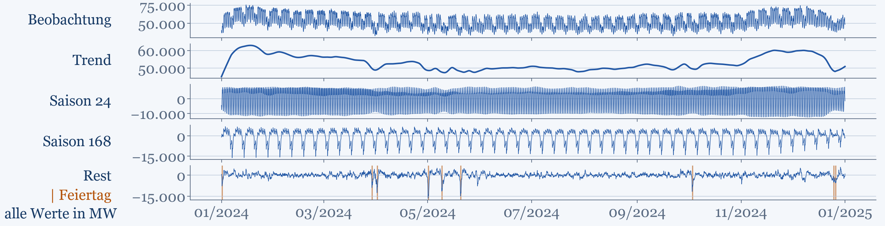
- Gesunder Rest: keine Periode, kein Trend, gleichbleibende Streuung
- Ausschläge an Feiertagen: Die Wochensaison erwartet einen Werktag, die Last verhält sich wie an einem Sonntag
- Struktur im Rest heißt: Ein Modell kann hier noch etwas lernen, etwa aus Kalender oder Wetter
Ein Ausschlag im Rest ist eine Abweichung vom Erwarteten, nicht automatisch ein Fehler in den Daten. Ob Feiertag, Störung oder Messfehler, klären Sie anhand des Kontexts.
Teil I · Eigenschaften von Zeitreihendaten
Autokorrelation: ACF und PACF
Die Autokorrelation zum Lag k ist die Korrelation der Reihe mit sich selbst, um k Schritte verschoben.
- ACF (Autokorrelationsfunktion): Korrelation mit Lag k, samt allen Wegen über die Lags dazwischen
- PACF (partielle Autokorrelationsfunktion): Korrelation mit Lag k, nachdem die Lags 1 bis k−1 herausgerechnet sind
- Spitzen bei 24 und 168 zeigen Tages- und Wochensaison
- Langsames Abklingen zeigt einen Trend oder eine nicht stationäre Reihe
from statsmodels.graphics.tsaplots import plot_acf, plot_pacf
plot_acf(load_h.dropna(), lags=400)
plot_pacf(load_h.dropna(), lags=400, method="ywm")
Teil I · Eigenschaften von Zeitreihendaten
Stationarität und Differenzen
Eine Reihe ist stationär, wenn Mittelwert, Streuung und Autokorrelation nicht davon abhängen, wann Sie hinschauen. Trend und Saison verletzen diese Bedingung.
- Differenz entfernt einen Trend: von jedem Wert den vorherigen abziehen, yₜ − yₜ₋₁
- Saisonale Differenz entfernt eine Periode: von jeder Stunde den Wert derselben Stunde eine Woche vorher abziehen, yₜ − yₜ₋₁₆₈ (168 Stunden = 7 Tage)
- Logarithmus: Schwankt die Reihe auf hohem Niveau stärker als auf niedrigem, gleicht der Logarithmus die Ausschläge an: Aus prozentualen Schwankungen werden gleich große
- ARIMA verlangt eine stationäre Reihe; das I im Namen steht für die Zahl der Differenzen
Der Day-ahead-Preis (Börsenpreis aus der Auktion am Vortag der Lieferung) wird regelmäßig negativ, dann ist der Logarithmus nicht definiert. Für Preise nehmen Sie den Areasinus hyperbolicus (asinh): Er wirkt bei großen Beträgen wie der Logarithmus und ist auch für negative Werte definiert. Oder Sie wählen ein Verfahren ohne Transformation, etwa Gradient Boosting (Teil V).
Hyndman, Athanasopoulos: Forecasting: Principles and Practice, 3. Aufl., Kap. 9.1. Uniejewski, Weron, Ziel (2018): Variance Stabilizing Transformations for Electricity Spot Price Forecasting, IEEE Transactions on Power Systems 33(2)
Teil I · Eigenschaften von Zeitreihendaten
Strukturbruch und Regimewechsel
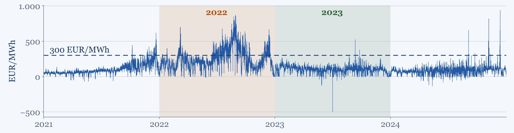
- Strukturbruch: Niveau, Streuung oder Saison ändern sich dauerhaft ab einem Zeitpunkt
- Regimewechsel: Die Reihe springt zwischen Zuständen mit eigenen Regeln
- Day-ahead-Preis der Gebotszone Deutschland/Luxemburg (DE/LU) über 300 EUR je MWh: 2022 in 2.346 Stunden, 2023 in 3 Stunden
Ein Modell, das auf 2022 trainiert und auf 2023 geprüft wird, lernt ein Preisniveau, das es nicht mehr gibt. Prüfen Sie vor jedem Training, aus welchem Regime die Trainingsdaten stammen.
Daten: Bundesnetzagentur | SMARD.de (CC BY 4.0), Day-ahead-Preis DE/LU, Auszählung vom 21.11.2026
Teil I · Eigenschaften von Zeitreihendaten
Reihentypen: univariat mit exogenen Größen
Der Reihentyp entscheidet, welche Verfahren in Frage kommen. Der einfachste Fall: eine Zielreihe, dazu Größen, die sie erklären. Hier die Netzlast mit Kalender, Feiertagen und Erzeugungsprognosen.
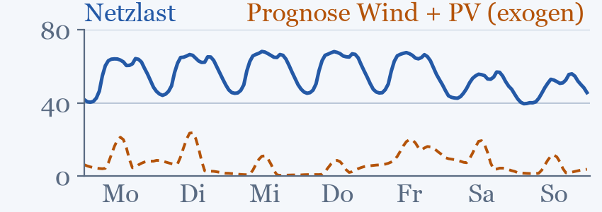
Bei exogenen Größen zählt, was zur Prognosezeit tatsächlich vorliegt: die Prognose der Einspeisung, nicht die realisierte Einspeisung.
Teil I · Eigenschaften von Zeitreihendaten
Reihentypen: multivariat
Mehrere Zielreihen, die sich gegenseitig beeinflussen und gemeinsam prognostiziert werden: Residuallast (Last minus Wind und PV) und Day-ahead-Preis.
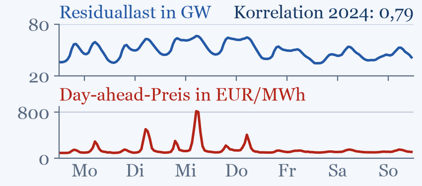
Teil I · Eigenschaften von Zeitreihendaten
Reihentypen: viele parallele Reihen
Reihen derselben Größe mit ähnlichem Tages- und Wochengang, aber unterschiedlich hoch: die Netzlast der vier Regelzonen. Ein gemeinsames Modell lernt aus allen.
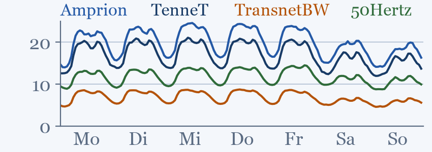
Teil I · Eigenschaften von Zeitreihendaten
Zusammenfassung Teil I
- Eine Zeitreihe zerfällt in Trend, Saison und Rest; die Netzlast hat drei Saisonperioden
- Resampling richtet sich nach der Einheit: Energie summieren, Preise und Leistungen mitteln, in UTC rechnen
- MSTL trennt Tages- und Wochengang; Struktur im Rest zeigt, was noch zu lernen ist
- ACF und PACF zeigen, welche Lags Information tragen
- Brüche und Regime entscheiden, welche Historie für das Training taugt
- Univariat, multivariat oder viele parallele Reihen: Der Reihentyp entscheidet über die Verfahren
Teil II
Baselines und klassische Verfahren
II
Einfache Prognosen setzen den Maßstab, den jedes Modell schlagen muss. Danach folgen die automatischen klassischen Verfahren in statsforecast.
Teil II · Baselines und klassische Verfahren
Was Sie in diesem Teil lernen
Jedes spätere Modell muss eine einfache Prognose schlagen. Die klassischen Verfahren sind die nächste Stufe:
- Die einfachen Prognosen Naive, Seasonal Naive, Naive mit Drift und gleitender Mittelwert aufstellen
- Eine Baseline als Maßstab für jedes weitere Modell einsetzen
- AutoETS, AutoARIMA und MSTL einordnen: was sie erfassen und wo sie an Grenzen stoßen
- Mehrere Verfahren mit statsforecast in einem Aufruf anwenden und im Backtest vergleichen
Teil II · Baselines und klassische Verfahren
Prognose, Klassifikation, Anomalieerkennung
| Aufgabe |
Ausgabe des Modells |
Label im Training |
Lernart |
Teil |
| Prognose |
Zahl: Netzlast morgen um 18 Uhr |
ja, der spätere Messwert |
überwacht (Regression) |
II–V |
| Klassifikation |
Wahrscheinlichkeit: starke Frequenzabweichung in der nächsten Stunde? |
ja, das spätere Ereignis |
überwacht (Klassifikation) |
VII |
| Anomalieerkennung |
Score: Wie ungewöhnlich ist dieser Wert? |
meist keines |
unüberwacht |
VI |
- Prognose und Klassifikation folgen demselben Muster: Merkmale aus der Vergangenheit, Ziel aus der Zukunft.
- Der Unterschied liegt im Ziel, Zahl oder Klasse, und damit in Verlustfunktion und Metrik.
- Anomalieerkennung hat meist kein Label: Das Verfahren lernt, wie das Normale aussieht, und meldet, was davon weit abweicht
Die Grenzen sind durchlässig: Liegen Labels für Anomalien vor, wird daraus Klassifikation. Und der Fehler einer Prognose ist selbst ein Anomalie-Score.
Teil II · Baselines und klassische Verfahren
Naive und Seasonal Naive
Naive
Jede Prognose ist der letzte beobachtete Wert.
Seasonal Naive
Jede Prognose ist der letzte Wert derselben Saisonposition, eine Periode m früher.
- Für die stündliche Last: m = 24 (gestern zur selben Stunde) oder m = 168 (vor einer Woche zur selben Stunde)
- Offene Frage: Was gewinnt die Prognose mit m = 168 gegenüber m = 24, und was verliert sie?
- Eine Woche nach einem Feiertag kopiert die Prognose mit m = 168 den Feiertag auf einen normalen Werktag
Hyndman, Athanasopoulos: Forecasting: Principles and Practice, 3. Aufl., Kap. 5.2
Teil II · Baselines und klassische Verfahren
Naive mit Drift und gleitender Mittelwert
Naive mit Drift
Letzter Wert plus mittlere Änderung je Schritt: die Gerade durch ersten und letzten Wert, verlängert.
Gleitender Mittelwert
Mittel der letzten w Werte, für alle Horizonte gleich. Die saisonale Variante mittelt dieselbe Stunde über die letzten Wochen.
- Die Drift hängt nur vom ersten und letzten Wert des Fensters ab, bei der Last also auch von der Uhrzeit dieser beiden Werte
- Glätten senkt das Rauschen, verwischt aber die Saison, wenn das Fenster nicht zur Periode passt
- In statsforecast: RandomWalkWithDrift (Ergebnisspalte RWD), WindowAverage(window_size=w), SeasonalWindowAverage(season_length=168, window_size=4)
Hyndman, Athanasopoulos: Forecasting: Principles and Practice, 3. Aufl., Kap. 3.3 und 5.2
Teil II · Baselines und klassische Verfahren
Die Baseline als Maßstab
Jedes Verfahren tritt im selben Backtest gegen dieselbe Baseline an.
- Gleiche Fenster, gleicher Horizont, gleiche Fehlermaße für alle Kandidaten
- Relativer Fehler: MAE (Mean Absolute Error) des Modells geteilt durch den MAE der Baseline; unter 1 heißt besser
- Ein MAE von einigen hundert MW sagt allein wenig; erst neben der Baseline lässt er sich einordnen
- Schlägt ein Modell jede Baseline sehr deutlich, prüfen Sie zuerst auf Leakage
Der MASE (Mean Absolute Scaled Error) aus Teil III folgt demselben Prinzip: Er teilt durch den Fehler der saisonalen Naive-Prognose auf den Trainingsdaten.
Teil II · Baselines und klassische Verfahren
Exponentielle Glättung mit AutoETS
Exponentielle Glättung gewichtet jüngere Werte stärker; das Gewicht fällt mit dem Alter geometrisch ab.
- ETS steht für Error, Trend, Seasonal: Trend und Saison können fehlen, jede Komponente kann additiv oder multiplikativ wirken, der Trend auch gedämpft
- Kurzschreibweise ETS(Fehler, Trend, Saison) mit A additiv, M multiplikativ, N keine: ETS(A,N,N) ist additiver Fehler ohne Trend und ohne Saison. In statsforecast heißt model="ZZA": Fehler und Trend automatisch (Z), Saison additiv
- AutoETS schätzt alle passenden Varianten und wählt die mit dem kleinsten AICc (korrigiertes Akaike-Informationskriterium)
- Liefert Prognoseintervalle aus dem Zustandsraummodell gleich mit
- Grenze: genau eine Saisonperiode; für die stündliche Last also 24 oder 168, nicht beide
Hyndman et al.: A state space framework for automatic forecasting using exponential smoothing methods, Int. J. Forecasting 18(3), 2002, DOI 10.1016/S0169-2070(01)00110-8
Teil II · Baselines und klassische Verfahren
ARIMA
- AR(p): Regression auf die letzten p Werte
- I(d): d-mal differenzieren, bis die Reihe stationär ist; y′ ist die differenzierte Reihe
- MA(q): Regression auf die letzten q Prognosefehler ε
- SARIMA (p,d,q)(P,D,Q)ₘ: dieselben Bausteine zusätzlich auf dem saisonalen Lag m
- AutoARIMA: wählt d und D über Einheitswurzeltests, sucht p, q, P, Q schrittweise anhand des AICc
Mit m = 168 wird die Suche auf stündlichen Daten langsam. Praktikabel ist m = 24 mit begrenztem Trainingsfenster.
Hyndman, Khandakar: Automatic Time Series Forecasting: The forecast Package for R, J. Statistical Software 27(3), 2008, DOI 10.18637/jss.v027.i03
Teil II · Baselines und klassische Verfahren
MSTL als Prognoseverfahren
MSTL zerlegt die Reihe wie in Teil I und prognostiziert die Teile getrennt.
- Jede Saisonkomponente (24 und 168) wird mit Seasonal Naive fortgeschrieben
- Die saisonbereinigte Reihe (Trend plus Rest) bekommt ein eigenes Verfahren, in statsforecast standardmäßig AutoETS ohne Saison
- Die Prognose ist die Summe der Teile
- Offen bis zum Backtest: Bringt die zweite Periode gegenüber Verfahren mit einer Periode einen messbaren Vorteil?
Bandara, Hyndman, Bergmeir: MSTL, arXiv:2107.13462. Hyndman, Athanasopoulos: Forecasting: Principles and Practice, 3. Aufl., Kap. 12.1
Teil II · Baselines und klassische Verfahren
statsforecast: mehrere Verfahren in einem Aufruf
statsforecast erwartet ein langes Format: eine Zeile je Reihe und Zeitpunkt, Spalten unique_id, ds, y.
import pandas as pd
from statsforecast import StatsForecast
from statsforecast.models import AutoETS, MSTL, SeasonalNaive
load = pd.read_parquet("load_de_hourly.parquet")
df = pd.DataFrame({
"unique_id": "DE",
"ds": load.index.tz_convert(None), # UTC ohne Zeitzonenangabe
"y": load["load_actual_mwh"].to_numpy(),
}).tail(24 * 7 * 12) # zwölf Wochen
sf = StatsForecast(
models=[SeasonalNaive(season_length=168), AutoETS(season_length=24),
MSTL(season_length=[24, 168])],
freq="h", n_jobs=1,
)
fc = sf.forecast(df=df, h=24)
cv = sf.cross_validation(df=df, h=24, step_size=24, n_windows=7)
Nixtla: statsforecast, Dokumentation, nixtlaverse.nixtla.io/statsforecast
Teil II · Baselines und klassische Verfahren
Zusammenfassung Teil II
| Verfahren |
erfasst |
Saisonperioden |
Klasse in statsforecast |
| Naive |
Niveau |
keine |
Naive |
| Seasonal Naive |
eine Saison |
eine |
SeasonalNaive |
| Naive mit Drift |
Niveau und linearen Trend |
keine |
RandomWalkWithDrift |
| Gleitender Mittelwert |
geglättetes Niveau |
keine oder eine |
WindowAverage, SeasonalWindowAverage |
| AutoETS |
Niveau, Trend, Saison |
eine |
AutoETS |
| AutoARIMA |
Autokorrelation nach dem Differenzieren |
eine |
AutoARIMA |
| MSTL |
Trend und mehrere Saisons |
mehrere |
MSTL |
Teil III
Evaluation
III
Sie prüfen eine Prognose so, wie sie später im Betrieb läuft: vom Horizont über den Backtest bis zum aufgeschlüsselten Fehler.
Teil III · Evaluation
Was Sie in diesem Teil lernen
Ein schlechter Backtest lässt jedes Modell gut aussehen. Deshalb klären Sie zuerst, wie gemessen wird:
Ausgangslage
Wann prognostiziert wird, für welchen Zeitraum und mit welchem Datenstand.
Backtest
Rolling-Origin statt k-fold, mit Gap für die Datenverfügbarkeit.
Fehlermaße
MASE als Vergleich mit der saisonalen Baseline, RMSE und MAE im Zusammenspiel.
Fehlerprofil
Wo das Modell versagt: nach Tageszeit, Wochentag und Regime.
Teil III · Evaluation
Der Horizont kommt zuerst
Bevor Sie einen Backtest bauen, legen Sie die Ausgangslage fest:
- Prognosezeitpunkt: wann die Prognose erstellt wird, etwa am Vortag um 10 Uhr
- Horizont: welche Zeitpunkte sie abdeckt, hier die 24 Stunden des Folgetags, also 14 bis 38 Stunden voraus
- Auflösung: Stunde oder Viertelstunde
- Datenstand: welche Werte zum Prognosezeitpunkt veröffentlicht sind
Horizont, Schrittweite und Datenstand des Backtests richten sich nach dieser Ausgangslage, nicht nach Bequemlichkeit.
Teil III · Evaluation
k-fold-Kreuzvalidierung bei Zeitreihen
- k-fold teilt die Daten in zufällige oder feste Blöcke, testet auf je einem und trainiert auf allen übrigen, auch auf späteren Blöcken
- Benachbarte Stunden sind stark autokorreliert: Ein Testwert hat seinen Nachbarn im Training
- Der Fehler fällt dadurch zu klein aus, und Modelle mit vielen Lags profitieren am meisten
k-fold verrät die Zukunft: Das Modell lernt aus Werten, die zum Prognosezeitpunkt noch nicht existieren.
Bergmeir, C.; Benítez, J. M. (2012): On the use of cross-validation for time series predictor evaluation. Information Sciences 191, 192 bis 213. doi:10.1016/j.ins.2011.12.028
Teil III · Evaluation
Rolling-Origin-Backtest
- Der Ursprung (Prognosezeitpunkt) wandert schrittweise durch die Testperiode
- Je Ursprung: trainieren auf der Vergangenheit, prognostizieren über den Horizont, Fehler merken
- Expanding Window: Das Training wächst mit jedem Ursprung
- Sliding Window: Das Training hat eine feste Länge und vergisst alte Regime
- Den Fehler über alle Ursprünge mitteln und zusätzlich nach Horizont aufschlüsseln
Tashman, L. J. (2000): Out-of-sample tests of forecasting accuracy. International Journal of Forecasting 16(4), 437 bis 450. doi:10.1016/S0169-2070(00)00065-0 · Hyndman, R. J.; Athanasopoulos, G.: Forecasting: Principles and Practice, 3. Aufl., Abschnitt 5.10, otexts.com/fpp3
Teil III · Evaluation
Gap gegen Leakage
- Zwischen Trainingsende und erstem Zielzeitpunkt liegt im Betrieb eine Lücke
- Gründe: Veröffentlichungsverzug der Messwerte, Prognose am Vortag für den Folgetag, Rolling-Merkmale, die über die Grenze reichen
- Der Gap im Backtest bildet diese Lücke nach: Werte darin dienen weder zum Training noch zum Test
- Ohne Gap unterstellt der Backtest eine Ausgangslage, die es im Betrieb nicht gibt
from sklearn.model_selection import TimeSeriesSplit
tscv = TimeSeriesSplit(n_splits=5, test_size=24, gap=14, max_train_size=24 * 7 * 52)
for train_idx, test_idx in tscv.split(X):
model.fit(X.iloc[train_idx], y.iloc[train_idx])
pred = model.predict(X.iloc[test_idx])
Verordnung (EU) Nr. 543/2013, Art. 6 Abs. 2: realisierte Gesamtlast spätestens eine Stunde nach der Betriebsperiode
Teil III · Evaluation
Backtest mit statsforecast
from statsforecast import StatsForecast
from statsforecast.models import SeasonalNaive, AutoETS
sf = StatsForecast(
models=[SeasonalNaive(season_length=168), AutoETS(season_length=24)],
freq="h",
n_jobs=1,
)
cv = sf.cross_validation(df=df, h=24, step_size=24, n_windows=30)
# Spalten: unique_id, ds, cutoff, y, SeasonalNaive, AutoETS
- h ist der Horizont, step_size der Abstand der Ursprünge, n_windows ihre Anzahl
- cutoff ist der Ursprung je Fold: Danach gruppieren Sie die Fehler
- input_size begrenzt das Training auf eine feste Länge (Sliding Window)
Teil III · Evaluation
MASE: Fehler relativ zur saisonalen Baseline
- MASE (Mean Absolute Scaled Error): MAE der Prognose geteilt durch den MAE der saisonalen Naive-Prognose im Training
- m ist die Saisonlänge: bei Stundendaten 24 für den Tag, 168 für die Woche
- MASE unter 1: besser als Seasonal Naive im Training; über 1: schlechter
- Skalenfrei: Last in MW und Preise in Euro je MWh lassen sich nebeneinanderlegen
Der Nenner ist der Fehler der saisonalen Naive-Prognose im Training, nicht der Fehler der Baseline bei Ihrem Horizont. Ein MASE knapp unter 1 heißt deshalb nicht automatisch, dass Sie die Baseline im Backtest schlagen.
Hyndman, R. J.; Koehler, A. B. (2006): Another look at measures of forecast accuracy. International Journal of Forecasting 22(4), 679 bis 688. doi:10.1016/j.ijforecast.2006.03.001
Teil III · Evaluation
RMSE gegen MAE
|
MAE (Mean Absolute Error) |
RMSE (Root Mean Squared Error) |
| Wer ihn minimiert, prognostiziert |
den Median |
den Mittelwert |
| Große Fehler |
zählen linear |
zählen quadratisch |
| Gut, um |
den typischen Fehler zu berichten |
seltene große Fehler sichtbar zu machen |
Berichten Sie beide. Liegt der RMSE weit über dem MAE, verursachen wenige große Fehler den Großteil des Schadens: bei der Last oft Feiertage, beim Preis einzelne Spitzen.
Hyndman, R. J.; Athanasopoulos, G.: Forecasting: Principles and Practice, 3. Aufl., Abschnitt 5.8, otexts.com/fpp3
Teil III · Evaluation
Fehler nach Tageszeit
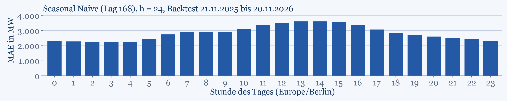
- Ein Gesamt-MAE versteckt, wann das Modell danebenliegt
- Gruppieren Sie die Backtest-Fehler nach Stunde in Ortszeit, nicht in UTC: Der Lastgang folgt der Uhr der Verbraucher
- Sie würden die größten Fehler an den Rampen am Morgen und Abend erwarten; im Backtest liegen sie mittags (12 bis 15 Uhr)
cv["abs_err"] = (cv["y"] - cv["SeasonalNaive"]).abs()
cv["hour"] = cv["ds"].dt.tz_localize("UTC").dt.tz_convert("Europe/Berlin").dt.hour
cv.groupby("hour")["abs_err"].mean()
Teil III · Evaluation
Fehler nach Regime
- Regime sind Abschnitte mit eigenem Verhalten: Preisniveau 2022, Feiertagswochen, Sommer gegen Winter
- Das Preisregime 2022 aus Teil I ist ein solcher Abschnitt
- Ein Modell, das 2022 im Training sah, kann 2023 systematisch zu hoch liegen
- Schlüsseln Sie den Fehler nach Regime auf und werten Sie jede Gruppe für sich aus
cv["regime"] = cv["ds"].dt.year.map(lambda y: "2022" if y == 2022 else "sonst")
cv.groupby(["regime", "hour"])["abs_err"].agg(["mean", "count"])
Weisen Sie immer die Anzahl je Gruppe mit aus. Zehn Feiertage im Testzeitraum reichen nicht für eine belastbare Aussage.
Teil III · Evaluation
Rückblick Evaluation
| Frage |
Antwort |
| Womit fängt der Backtest an? |
Mit Prognosezeitpunkt, Horizont und Datenstand |
| Wie wird geteilt? |
Rolling-Origin, expanding oder sliding, nie k-fold |
| Was schützt vor Leakage? |
Ein Gap, der den Veröffentlichungsverzug abbildet |
| Womit wird verglichen? |
Mit MASE und dem MAE der saisonalen Baseline im selben Backtest |
| Welches Fehlermaß? |
MAE und RMSE zusammen, dazu eine Bias-Kennzahl |
| Wo liegt der Fehler? |
Nach Tageszeit, Wochentag und Regime aufgeschlüsselt |
Teil IV
Preprocessing und Merkmale
IV
Sie machen aus der Rohdatei eine Merkmalstabelle: Lücken, Zeitzonen und Extremwerte klären, dann Merkmale bauen, die zum Prognosezeitpunkt wirklich vorliegen.
Teil IV · Preprocessing und Merkmale
Was Sie in diesem Teil lernen
Sie prüfen jedes Merkmal an derselben Ausgangslage wie in Teil III: Prognosezeitpunkt, Horizont, Datenstand.
Daten bereinigen
Fehlende Werte, Sommerzeit in der Rohdatei, Ausreißer oder echte Preisspitze.
Merkmale aus der Reihe
Lags und Rolling-Statistiken, passend zum Horizont verschoben.
Merkmale aus dem Kalender
Stunde, Wochentag, Feiertage und Fourier-Terme für mehrere Saisonalitäten.
Exogene Größen
Was zum Prognosezeitpunkt verfügbar ist und wie Residuallast und Preis zeitlich zusammenhängen.
Teil IV · Preprocessing und Merkmale
Fehlende Werte
In SMARD-Dateien steht „-“ für einen fehlenden Wert, beim Einlesen wird daraus NaN.
| Lage |
Vorgehen |
| Einzelne Stunde fehlt |
linear interpolieren, höchstens zwei Stunden in Folge (limit=2) |
| Mehrere Stunden in einer Rampe |
saisonal füllen, etwa mit dem Wert der Vorwoche |
| Tage oder Wochen fehlen |
nicht füllen, als Lücke markieren, vom Backtest ausnehmen |
| Wert fehlt nur in einem Merkmal |
Indikatorspalte setzen (1 = Wert fehlte); LightGBM verarbeitet NaN direkt |
df["load_missing"] = df["load_actual_mwh"].isna().astype(int)
df["load_filled"] = df["load_actual_mwh"].interpolate(method="time", limit=2)
Füllen ist kein neutraler Schritt. Bei gefülltem Ziel vergleichen Sie die Prognose mit einer Annahme, nicht mit einer Messung.
Teil IV · Preprocessing und Merkmale
Sommerzeit in der Rohdatei
SMARD liefert lokale Zeit. Am letzten Sonntag im Oktober steht die Stunde 02:00 zweimal in der Datei:
| Zeitstempel in der Datei |
Bedeutung |
UTC |
| 26.10.2025 01:00 |
Sommerzeit |
25.10.2025 23:00 |
| 26.10.2025 02:00 |
Sommerzeit, erstes Mal |
26.10.2025 00:00 |
| 26.10.2025 02:00 |
Winterzeit, zweites Mal |
26.10.2025 01:00 |
| 26.10.2025 03:00 |
Winterzeit |
26.10.2025 02:00 |
- Lokale Zeit ist als Index unbrauchbar: doppelte Schlüssel im Oktober, im März fehlt die Stunde 02:00 ganz
- Arbeiten Sie intern in UTC und rechnen Sie nur für Kalendermerkmale (Stunde, Wochentag, Feiertag) in Ortszeit um
Teil IV · Preprocessing und Merkmale
Rohdatei nach UTC bringen
import pandas as pd
raw = pd.read_csv(
"smard_raw_dst_week.csv",
sep=";", decimal=",", thousands=".", na_values="-",
)
local = pd.to_datetime(raw["Datum von"], format="%d.%m.%Y %H:%M")
idx = pd.DatetimeIndex(local).tz_localize("Europe/Berlin", ambiguous="infer")
raw.index = idx.tz_convert("UTC")
- ambiguous="infer" löst die doppelte Stunde über die Reihenfolge auf: erst Sommerzeit, dann Winterzeit
- Das funktioniert nur, wenn die Datei sortiert und vollständig ist; sonst bricht pandas mit einem Fehler ab
- Danach ist der Index eindeutig und lückenlos stündlich
Teil IV · Preprocessing und Merkmale
Ausreißer oder echte Preisspitze
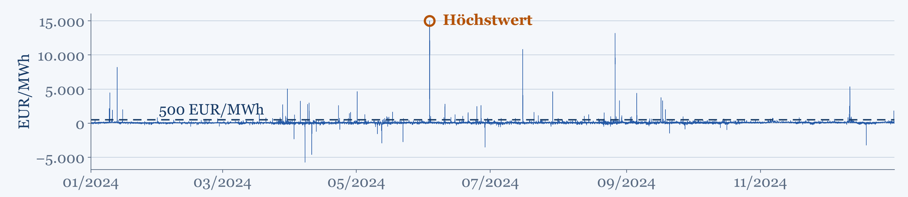
- Preis der Ausgleichsenergie 2024: Spanne von −5.734,46 bis 14.999,99 Euro je MWh, Median 89,96
- 296 von 35.136 Viertelstunden lagen über 500 Euro je MWh, 115 davon über 1.000
- Diese Werte sind echte Preise, keine Messfehler: Wer sie löscht, löscht die Ereignisse, die später erkannt werden sollen
- Prüfen Sie vor dem Eingriff: zweite Quelle, Kontext (Saldo des Netzregelverbunds, Day-ahead-Preis), physikalische Grenze
Ausreißer im Merkmal dürfen Sie begrenzen. Extremwerte im Ziel bleiben; behandeln Sie sie über das Fehlermaß, nicht durch Löschen.
Teil IV · Preprocessing und Merkmale
Prognose als Regressionsproblem
Ein Modell wie LightGBM kennt keine Zeit. Jede Zeile der Merkmalstabelle ist ein eigenes Beispiel:
| Zielzeitpunkt |
Ziel |
Last vor 48 h |
Last vor 168 h |
Stunde |
Feiertag |
Windprognose |
| t |
y(t) |
y(t−48) |
y(t−168) |
8 |
0 |
vom Vortag |
| t+1 |
y(t+1) |
y(t−47) |
y(t−167) |
9 |
0 |
vom Vortag |
- Das Zeitgedächtnis steckt vollständig in den Merkmalen: Lags (frühere Werte der Reihe, hier vor 48 und 168 Stunden), Fenster (Statistiken über mehrere frühere Werte), Kalender
- Jede Spalte muss zum Prognosezeitpunkt bekannt sein, sonst lernt das Modell aus der Zukunft
Teil IV · Preprocessing und Merkmale
Lags passend zum Horizont
- Ein Lag k ist der Wert der Reihe k Schritte vor dem Zielzeitpunkt: y.shift(k)
- Zum Prognosezeitpunkt kennen Sie nur Werte bis zum Datenstand
- Regel: Für Horizont h ist ein Lag k nur zulässig, wenn k mindestens h plus Veröffentlichungsverzug beträgt
- Prognose um Mitternacht für die nächsten 24 Stunden: ab Lag 24 zulässig
- Prognose am Vortag um 10 Uhr für den Folgetag (bis 38 Stunden voraus): ab Lag 38, in der Praxis Lag 48 und Lag 168
Ist ein Lag kürzer als der Horizont, nutzt er Werte, die zum Prognosezeitpunkt noch nicht gemessen sind.
Teil IV · Preprocessing und Merkmale
Rolling-Statistiken mit shift
H = 24 # Horizont in Stunden
y = df["load_actual_mwh"]
df["lag_24"] = y.shift(H)
df["lag_168"] = y.shift(168)
df["roll_mean_168"] = y.shift(H).rolling(168).mean()
df["roll_std_24"] = y.shift(H).rolling(24).std()
df["ewm_24"] = y.shift(H).ewm(span=24).mean()
- Erst shift, dann rolling: Das Fenster endet am Datenstand, nicht am Zielzeitpunkt
- y.rolling(24).mean() ohne shift enthält den Zielwert selbst
- Mehrere Reihen: df.groupby("unique_id")["load"].shift(H), sonst greift der Lag in die Nachbarreihe
Teil IV · Preprocessing und Merkmale
Kalendermerkmale in Ortszeit
local = df.index.tz_convert("Europe/Berlin")
df["hour"] = local.hour
df["weekday"] = local.day_of_week
df["month"] = local.month
df["is_weekend"] = (local.day_of_week >= 5).astype(int)
- Der Index bleibt in UTC, die Kalendermerkmale kommen aus der Ortszeit
- Grund: Arbeitsbeginn, Licht und Ladenöffnung folgen der Uhr an der Wand
- Kalendermerkmale sind immer bekannt, auch für den Folgetag
- Stunde und Wochentag als Kategorie oder als Zahl: Das entscheidet der Backtest
Teil IV · Preprocessing und Merkmale
Feiertage
import holidays
years = range(2019, 2027)
de = holidays.country_holidays("DE", years=years)
bw = holidays.country_holidays("DE", subdiv="BW", years=years)
df["is_holiday_de"] = [d in de for d in local.date]
df["is_holiday_bw"] = [d in bw for d in local.date]
- Ohne subdiv liefert das Paket nur die bundesweiten Feiertage
- Für die deutsche Gesamtlast zählen auch regionale Feiertage: Fronleichnam, Allerheiligen
- Brückentage und die Tage zwischen Weihnachten und Neujahr verhalten sich ähnlich wie Feiertage; dafür eigene Merkmale bauen
Teil IV · Preprocessing und Merkmale
Fourier-Terme für mehrere Saisonalitäten
- Jede Saisonalität mit Periode P bekommt K Sinus-Kosinus-Paare
- Bei Stundendaten: P = 24 (Tag), 168 (Woche), 8.766 (Jahr, 365,25 mal 24)
- Kleines K ergibt eine glatte Kurve, großes K bildet auch scharfe Profile ab
- Die Terme sind für jeden Zeitpunkt in der Zukunft bekannt
import numpy as np
t = (df.index - pd.Timestamp("2019-01-01", tz="UTC")) / pd.Timedelta(hours=1)
for period, K in [(24, 3), (168, 2), (8766, 2)]:
for k in range(1, K + 1):
df[f"sin_{period}_{k}"] = np.sin(2 * np.pi * k * t / period)
df[f"cos_{period}_{k}"] = np.cos(2 * np.pi * k * t / period)
Hyndman, R. J.; Athanasopoulos, G.: Forecasting: Principles and Practice, 3. Aufl., Abschnitt 12.1, otexts.com/fpp3
Teil IV · Preprocessing und Merkmale
Exogene Größen zur Prognosezeit
| Größe |
Zur Prognosezeit verfügbar? |
Was Sie stattdessen nehmen |
| Realisierte Wind- und PV-Einspeisung des Folgetags |
nein |
Day-ahead-Prognose von Wind und PV |
| Day-ahead-Prognose Wind und PV |
spätestens 18 Uhr am Vortag |
vor 18 Uhr: eigene Wetterprognose oder ältere Fassung |
| Day-ahead-Lastprognose |
spätestens zwei Stunden vor Gebotsschluss des Day-ahead-Markts |
|
| Realisierte Last |
spätestens eine Stunde nach der Betriebsperiode |
nur als Lag ab dem Datenstand |
- Maßgeblich ist der Veröffentlichungszeitpunkt, nicht der Zeitstempel, für den der Wert gilt
- Im Training stehen die realisierten Werte bereit, im Betrieb fehlen sie
Verordnung (EU) Nr. 543/2013, Art. 6 Abs. 2 und Art. 14 Abs. 2 (Fristen für die Transparenzplattform)
Teil IV · Preprocessing und Merkmale
Lead-Lag und Kreuzkorrelation
- Die Kreuzkorrelation (CCF, cross-correlation function) misst den Zusammenhang zweier Reihen bei Verschiebung k
- Liegt das Maximum bei positivem k, läuft y der Reihe x voraus
- Zwischen Residuallast (Last minus Wind und PV) und Day-ahead-Preis zeigt die CCF, welcher Versatz sich als Merkmal lohnt
- Gemeinsame Tages- und Wochensaison erzeugt hohe Korrelation bei jedem Vielfachen von 24: erst die Saison entfernen, dann vergleichen
Eine hohe Kreuzkorrelation zeigt einen zeitlichen Zusammenhang, keine Ursache.
Teil IV · Preprocessing und Merkmale
Kreuzkorrelation in Python
from statsmodels.tsa.stattools import ccf
x = df["price_eur_mwh"].diff(168).dropna()
y = df["residual_load_actual_mwh"].diff(168).dropna()
x, y = x.align(y, join="inner")
rho = ccf(x, y, nlags=49) # rho[k] = corr(x[t+k], y[t])
best_k = abs(rho).argmax()
- ccf(x, y) liefert nur Verschiebungen k ≥ 0; für die Gegenrichtung die Argumente tauschen
- Beide Reihen auf denselben Index bringen, bevor Sie korrelieren
- Prüfen Sie das Maximum gegen die Verfügbarkeit: Ein Versatz unter dem Horizont ist als Merkmal nicht nutzbar
Teil IV · Preprocessing und Merkmale
Rückblick Preprocessing und Merkmale
| Schritt |
Regel |
| Fehlende Werte |
kurze Lücken mit Grenze füllen, lange markieren, das Ziel nie füllen |
| Zeitzonen |
intern UTC, ambiguous="infer" für die doppelte Stunde |
| Extremwerte |
erst prüfen, echte Preisspitzen im Ziel lassen |
| Lags und Fenster |
erst shift um mindestens den Horizont, dann rolling |
| Kalender |
Ortszeit, Feiertage mit holidays, Fourier je Periode |
| Exogene Größen |
nur, was zur Prognosezeit veröffentlicht ist |
| Lead-Lag |
CCF nach Entfernen der Saison, Versatz gegen den Horizont prüfen |
Teil V
Gradient Boosting
V
Flache Bäume nacheinander, jeder korrigiert die Fehler der Bäume davor: So lernt LightGBM aus den Merkmalen von Teil IV eine Prognose für einen festen Horizont und mit demselben Verfahren auch Klassen. Sie sehen auch, wo Bäume an Grenzen stoßen.
Teil V · Gradient Boosting
Was Sie in diesem Teil lernen
Der Horizont aus Teil III bestimmt die erlaubten Lags aus Teil IV. Darauf baut dieser Teil auf:
- Wie Boosting Bäume kombiniert und warum das anders wirkt als Bagging
- Wo Baummodelle an ihre Grenze stoßen: Werte außerhalb des Trainingsbereichs
- Ein LightGBM-Modell auf Lag-Merkmalen aufsetzen
- Mit demselben Verfahren Klassen statt Zahlen vorhersagen
- Wie eine gezielte Hyperparametersuche mit Optuna abläuft
Teil V · Gradient Boosting
Bagging gegen Boosting
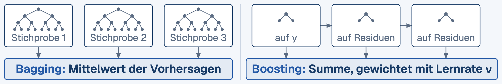
- Bagging (Bootstrap Aggregating, etwa Random Forest): viele tiefe Bäume (sie teilen die Daten, bis in jedem Blatt nur noch wenige Beobachtungen liegen) unabhängig voneinander trainieren und mitteln; das senkt vor allem die Varianz
- Boosting: flache Bäume (wenige Teilungen, in LightGBM standardmäßig höchstens 31 Blätter je Baum) nacheinander trainieren, jeder korrigiert die verbleibenden Fehler aller Bäume davor; das senkt vor allem den Bias
- Die Lernrate ν und die Zahl der Bäume steuern zusammen, wie weit das Modell den Trainingsdaten folgt
Breiman 1996, Bagging Predictors, doi:10.1007/BF00058655 · Friedman 2001, Greedy Function Approximation, doi:10.1214/aos/1013203451 · Chen und Guestrin 2016, XGBoost, doi:10.1145/2939672.2939785
Teil V · Gradient Boosting
Grenze von Bäumen: keine Extrapolation
- Ein Baum sagt in jedem Blatt einen Mittelwert aus Zielwerten des Trainings voraus. Jenseits des letzten Splits bleibt die Vorhersage konstant
- Ein Boosting-Modell ist eine Summe solcher Treppen: Es kann nicht über den Wertebereich hinaus, den es im Training gesehen hat
- Betroffen sind Reihen mit Trend oder Niveausprung: wachsende Einspeisung, neues Preisregime, neue Höchstlast
Bäume extrapolieren nicht. Entfernen Sie den Trend vor dem Boosting (Differenz zum Lag, Verhältnis zum Vorjahr) oder überlassen Sie ihn einem linearen Modell.
Teil V · Gradient Boosting
LightGBM auf Lag-Merkmalen
import lightgbm as lgb
import pandas as pd
y = load["load_actual_mwh"] # stündlich, DatetimeIndex in UTC
local = load.index.tz_convert("Europe/Berlin")
X = pd.DataFrame({
"lag_48": y.shift(48),
"lag_72": y.shift(72),
"lag_168": y.shift(168),
"roll_mean_24": y.shift(48).rolling(24).mean(),
"hour": local.hour,
"dayofweek": local.dayofweek,
}, index=load.index).dropna()
y = y.loc[X.index]
model = lgb.LGBMRegressor(random_state=1, verbose=-1) # Standardwerte
model.fit(X.loc[:"2024-12-31"], y.loc[:"2024-12-31"])
pred = model.predict(X.loc["2025-01-01":])
- Prognose am Vortag um 10 Uhr, bis 38 Stunden voraus: Lags ab 48 Stunden, Rolling-Statistik erst nach shift(48); Training bis Ende 2024 mit Standardwerten, Prognose ab 2025
Ke et al. 2017, LightGBM, NeurIPS 30 · LightGBM-Dokumentation, LGBMRegressor · Makridakis et al. 2022, M5 Accuracy, doi:10.1016/j.ijforecast.2021.11.013
Teil V · Gradient Boosting
Merkmalswichtigkeit nach Gain
gain = pd.Series(model.booster_.feature_importance("gain"), index=X.columns)
share = 100 * gain / gain.sum() # Anteil je Merkmal in %
share.sort_values(ascending=False).head(5)
- Gain: Jeder Split senkt den Verlust auf den Trainingsdaten. Der Gain eines Merkmals ist die Summe dieser Senkungen über alle Splits auf dem Merkmal, in allen Bäumen
- Die Voreinstellung von LightGBM ist "split": Sie zählt nur, wie oft ein Merkmal für einen Split gewählt wurde, egal wie viel er bringt
- Gain beschreibt das Modell, nicht die Ursache: Zwei stark korrelierte Merkmale teilen sich den Gain, und ein Merkmal mit Leckage sieht besonders wichtig aus
LightGBM-Dokumentation, Booster.feature_importance
Teil V · Gradient Boosting
Gradient Boosting für Klassifikation
Dasselbe Verfahren sagt auch Klassen voraus. Das Ziel ist dann ein Label, 1 für ein Ereignis und 0 für keins, etwa „starke Frequenzabweichung in der kommenden Stunde“.
- Die Bäume addieren keine Megawatt mehr, sondern Log-Odds, den Logarithmus der Chance p / (1 − p)
- Die Sigmoidfunktion macht aus der Summe eine Wahrscheinlichkeit p zwischen 0 und 1
- Verlust ist der Log-Loss. Jeder neue Baum lernt den Restfehler y − p, so wie beim Regressor die Residuen y − ŷ
- Mehr als zwei Klassen: je Klasse eine Baumkette, Softmax statt Sigmoid
Friedman 2001, Greedy Function Approximation, doi:10.1214/aos/1013203451 · LightGBM-Dokumentation, Parameter objective
Teil V · Gradient Boosting
Regressor und Classifier im Vergleich
|
Regression (Prognose) |
Klassifikation |
| Modell in LightGBM |
LGBMRegressor |
LGBMClassifier |
| Zielgröße |
Zahl, etwa die Netzlast in MW |
Klasse, etwa Ereignis ja oder nein |
| Verlust |
quadratischer oder absoluter Fehler |
Log-Loss |
| Ausgabe |
ein Wert |
eine Wahrscheinlichkeit je Klasse |
from lightgbm import LGBMClassifier, LGBMRegressor
reg = LGBMRegressor(random_state=1, verbose=-1)
reg.fit(X_train, y_train) # y: Netzlast in MW
load_pred = reg.predict(X_test) # Werte in MW
clf = LGBMClassifier(random_state=1, verbose=-1)
clf.fit(X_train, event_train) # event: 0 oder 1
p_event = clf.predict_proba(X_test)[:, 1] # Wahrscheinlichkeit für das Ereignis
Merkmale, zeitliche Validierung und Leakage-Regeln aus Teil III und IV gelten für beide Aufgaben unverändert.
Teil V · Gradient Boosting
Hyperparameter mit Optuna suchen
- Optuna schlägt Parameter vor, bewertet sie und lernt daraus, wo es weitersucht
- Experiment: die LightGBM-Standardwerte, bewertet auf einem Validierungsfenster vor dem Testzeitraum
import optuna
from sklearn.metrics import mean_absolute_error
def objective(trial):
params = {
"n_estimators": trial.suggest_int("n_estimators", 50, 1000, log=True),
"num_leaves": trial.suggest_int("num_leaves", 15, 255, log=True),
"learning_rate": trial.suggest_float("learning_rate", 0.01, 0.3, log=True),
"min_child_samples": trial.suggest_int("min_child_samples", 5, 100),
}
model = lgb.LGBMRegressor(random_state=1, verbose=-1, **params)
model.fit(X_fit, y_fit)
return mean_absolute_error(y_val, model.predict(X_val))
study = optuna.create_study(direction="minimize", sampler=optuna.samplers.TPESampler(seed=1))
study.enqueue_trial({"n_estimators": 100, "num_leaves": 31, # Standardwerte
"learning_rate": 0.1, "min_child_samples": 20})
study.optimize(objective, n_trials=30)
Akiba et al. 2019, Optuna, arXiv:1907.10902
Teil V · Gradient Boosting
Zusammenfassung Gradient Boosting
- Boosting addiert flache Bäume, die jeweils die Restfehler korrigieren; LightGBM ist dafür das Arbeitspferd
- Bäume extrapolieren nicht: Trend und Niveausprünge gehören vor dem Boosting aus der Zielgröße heraus
- Die Lags richten sich nach dem Horizont
- Derselbe Algorithmus klassifiziert: Log-Loss statt quadratischem Fehler, Wahrscheinlichkeit statt Wert
- Tuning kommt nach guten Merkmalen und läuft immer auf einem Validierungsfenster vor dem Test
- Ob ein Modell trägt, entscheidet der Backtest gegen eine starke Referenz
Teil VI
Anomalieerkennung
VI
Sie machen aus einem Score einen Alarm und aus Alarmen ein Ereignis, und Sie bewerten Detektoren je Ereignis statt je Zeitpunkt.
Teil VI · Anomalieerkennung
Was Sie in diesem Teil lernen
Alle Detektoren unterscheiden sich nur im Score und in der Schwelle, die Bewertung bleibt gleich. Das macht sie vergleichbar:
- Anomalien nach Typ unterscheiden: Punkt, kontextuell, kollektiv
- Jeden Detektor im selben Rahmen lesen: Score, Schwelle, Alarm, Ereignis
- Statistische Scores bauen: gleitender z-Score, robuster z-Score mit MAD, STL-Residuen, CUSUM
- Isolation Forest auf Fenstermerkmalen und das Prognose-Residuum als Score einsetzen
- Schwellen an Kontext und System anpassen
- Detektoren je Ereignis bewerten: Precision, Recall, Latenz, Alarmbudget
Teil VI · Anomalieerkennung
Anomalietypen
Punktanomalie
Ein einzelner Wert liegt weit außerhalb des Üblichen, egal wann er auftritt. Beispiel: Ein einzelner Sekundenwert der Frequenz springt und fällt sofort zurück, oft ein Messfehler.
Kontextuelle Anomalie
Der Wert ist nur in seinem Kontext auffällig: Tageszeit, Wochentag, Feiertag, Netzzustand. Beispiel: eine Netzlast, die an einem Werktag normal wäre, an einem Feiertag aber nicht.
Kollektive Anomalie
Kein Einzelwert ist extrem, aber die Folge ist es: eine anhaltende Abweichung, ein Sprung im Niveau, ein ungewöhnlicher Verlauf über Sekunden oder Stunden.
Chandola, Banerjee, Kumar (2009): Anomaly Detection: A Survey. ACM Computing Surveys 41(3), Art. 15. DOI 10.1145/1541880.1541882
Teil VI · Anomalieerkennung
Anomalietypen im Verlauf
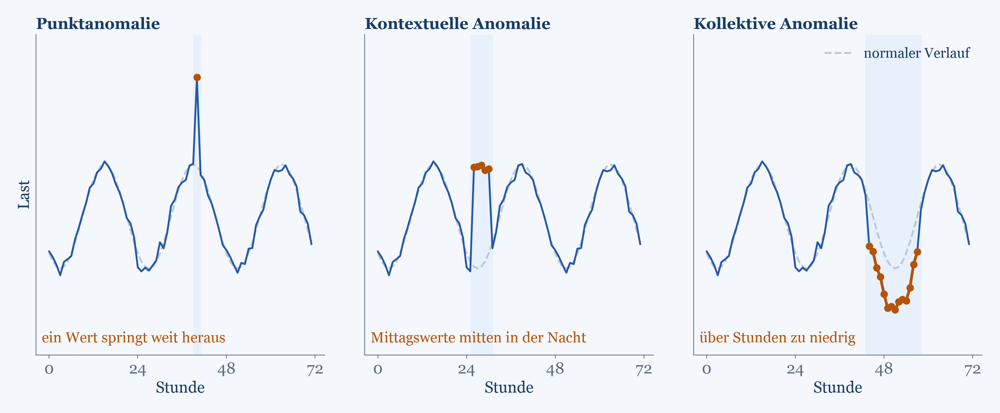
Teil VI · Anomalieerkennung
Rahmen: Score, Schwelle, Alarm, Ereignis
- Score: eine Zahl je Zeitpunkt oder Fenster; je höher, desto ungewöhnlicher
- Schwelle: macht aus dem Score eine Ja-Nein-Entscheidung
- Alarm: jeder Zeitpunkt über der Schwelle
- Ereignis: zusammenhängende Alarme, mit Beginn, Ende und Spitzenwert
Die Verfahren dieses Teils unterscheiden sich nur in Score und Schwelle. Alarme, Ereignisse und Bewertung bleiben gleich.
Teil VI · Anomalieerkennung
Alarme zu Ereignissen zusammenfassen
import pandas as pd
dev = (freq - 50.0) * 1000 # Abweichung von 50 Hz in mHz
alarm = dev.abs() > 100 # Alarm je Sekunde
start = alarm & ~alarm.shift(1, fill_value=False)
event_id = start.cumsum()[alarm]
events = dev.abs()[alarm].groupby(event_id).agg(
begin=lambda s: s.index.min(),
end=lambda s: s.index.max(),
peak_mhz="max",
)
- Jede Alarmfolge ohne Unterbrechung wird ein Ereignis
- Sie legen zwei Regeln fest: kurze Pausen überbrücken, kurze Ereignisse verwerfen
- Beide Regeln verändern die Ereigniszahl stärker, als man erwartet
Teil VI · Anomalieerkennung
Netzauftrennung am 08.01.2021
- Um 14:05 Uhr (MEZ) trennt sich das Synchrongebiet Kontinentaleuropa in einen Nordwest- und einen Südostteil
- Nordwest: Lastüberschuss, die Frequenz fällt; Südost: Erzeugungsüberschuss, sie steigt
- Wiederverbunden um 15:08 Uhr
- In den Sekundendaten von TransnetBW: Minimum 49,750 Hz um 14:05:12 Uhr, an diesem Tag 317 Sekunden mit mehr als 100 mHz Abweichung
ENTSO-E (2021): Continental Europe Synchronous Area Separation on 08 January 2021. ICS Investigation Expert Panel, Final Report, 15 July 2021
Teil VI · Anomalieerkennung
Feste Schwelle auf die Abweichung
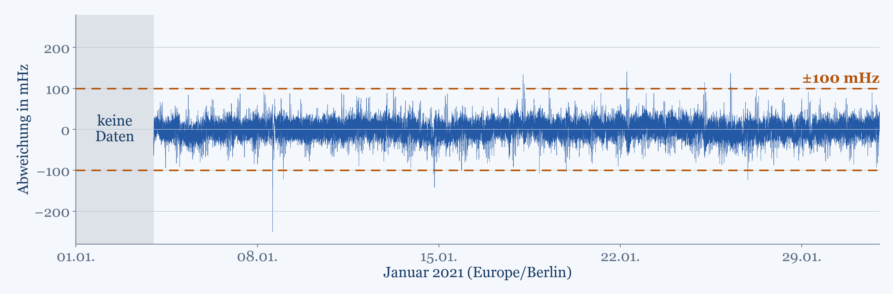
- Score: Betrag der Abweichung von 50 Hz in mHz, Schwelle fest
- Erst die Lücken prüfen: Vom 01. bis 03.01.2021 fehlen alle Werte; eine fehlende Sekunde ist kein Alarm und keine Entwarnung
- Die feste Schwelle ist die Referenz, an der sich jeder andere Detektor messen lassen muss
Teil VI · Anomalieerkennung
Gleitender z-Score
- μ und σ stammen aus einem Fenster der Länge w unmittelbar vor t, ohne den aktuellen Wert
- Score ist der Betrag von z, Schwelle etwa 3 oder 4
- Das Fenster legt fest, was als normal gilt: Ein kurzes reagiert schnell, ein langes ist ruhiger
- Schwäche: Ein großer Ausreißer im Fenster bläht σ auf und verdeckt die nächsten
Teil VI · Anomalieerkennung
Robuster z-Score mit MAD
- Median statt Mittelwert, MAD (Median der absoluten Abweichungen) statt Standardabweichung
- Einzelne Extreme im Fenster verschieben Median und MAD kaum
- Der Faktor 0,6745 macht den Score bei Normalverteilung mit dem z-Score vergleichbar
- Übliche Schwelle: Betrag über 3,5
Iglewicz, Hoaglin (1993): How to Detect and Handle Outliers. ASQC Quality Press
Teil VI · Anomalieerkennung
z-Score und MAD in pandas
w = "300s" # Fenster: 300 Sekunden
mu = dev.rolling(w).mean().shift(1)
sd = dev.rolling(w).std().shift(1)
z = ((dev - mu) / sd).abs() # Score: Betrag
med = dev.rolling(w).median().shift(1)
mad = (dev - med).abs().rolling(w).median().shift(1)
z_robust = (0.6745 * (dev - med) / mad).abs() # Score: Betrag
- shift(1) hält den aktuellen Wert aus seinem eigenen Fenster heraus
- Mit Zeitfenstern als Text ("300s") rechnet pandas auch über Lücken richtig
- Die MAD-Zeile ist eine schnelle Näherung: Median der Abweichungen vom jeweiligen gleitenden Median
Teil VI · Anomalieerkennung
Änderungsrate als zweites Signal
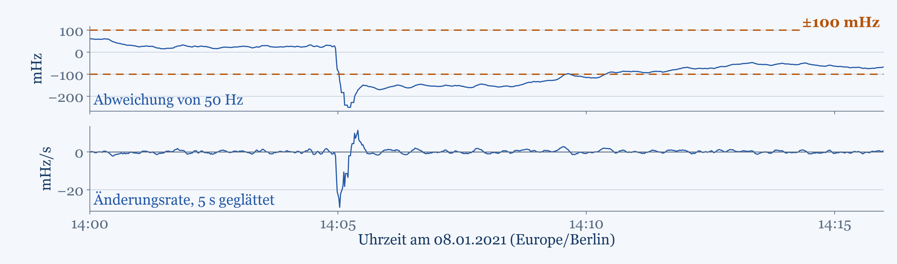
- ROCOF (Rate of Change of Frequency): wie schnell sich die Frequenz ändert, in mHz je Sekunde
- Was zeigt sich bei einem großen Leistungsausfall zuerst: die Steigung oder das Niveau?
- Die Differenz verstärkt das Rauschen: vor der Schwelle über wenige Sekunden glätten
- Zwei Scores, zwei Schwellen: Alarm, wenn einer der beiden anschlägt
Teil VI · Anomalieerkennung
STL-Residuen als Score
- STL (Seasonal-Trend decomposition using LOESS) zerlegt die Reihe in Trend, Saison und Rest
- Score ist der robuste z-Score des Rests, nicht der Rohwert
- So wird ein Wert sichtbar, der für seine Tageszeit ungewöhnlich ist, auch wenn er absolut unauffällig ist
- Mehrere Saisons (Tag und Woche): MSTL aus Teil II
Cleveland, Cleveland, McRae, Terpenning (1990): STL: A Seasonal-Trend Decomposition Procedure Based on Loess. Journal of Official Statistics 6(1), 3–73
Teil VI · Anomalieerkennung
Change Points mit CUSUM
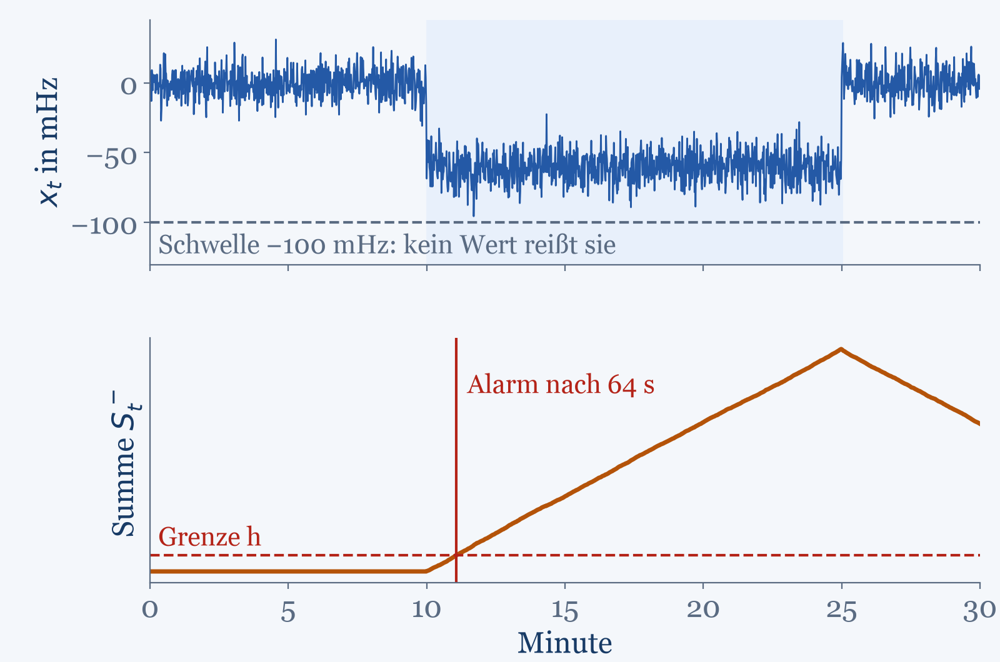
- CUSUM (Cumulative Sum) addiert kleine Abweichungen vom Sollwert μ₀ auf
- k ist die Toleranz: Abweichungen darunter werden vergessen
- Alarm, sobald S⁺ oder S⁻ die Entscheidungsgrenze h überschreitet
- Findet anhaltende Verschiebungen, bei denen kein Einzelwert eine Schwelle reißt
Page (1954): Continuous Inspection Schemes. Biometrika 41(1/2), 100–115. DOI 10.1093/biomet/41.1-2.100
Teil VI · Anomalieerkennung
Change Points mit PELT
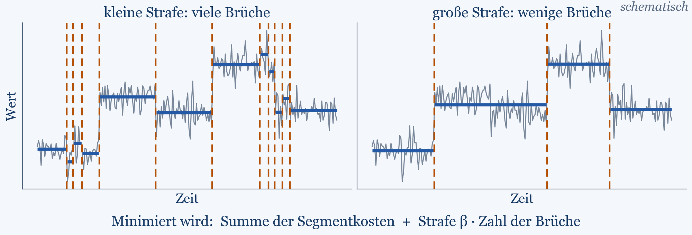
- PELT (Pruned Exact Linear Time) sucht nachträglich die beste Zerlegung in Segmente
- Zielfunktion: Kosten je Segment plus eine Strafe für jeden Bruch
- Kleine Strafe: viele Brüche, viele Fehlalarme; große Strafe: feine Brüche gehen verloren
- Eher für die Analyse im Nachhinein als für den Alarm in Echtzeit
Killick, Fearnhead, Eckley (2012): Optimal Detection of Changepoints With a Linear Computational Cost. JASA 107(500), 1590–1598. DOI 10.1080/01621459.2012.737745
Teil VI · Anomalieerkennung
Fenstermerkmale je 10 Sekunden
import pandas as pd
rate = dev.diff() # mHz je Sekunde
feat = pd.DataFrame({
"mean": dev.resample("10s").mean(),
"std": dev.resample("10s").std(),
"extreme": dev.abs().resample("10s").max(),
"rate": rate.abs().resample("10s").max(),
}).dropna()
- Jedes Fenster wird zu einer Zeile: Mittel, Streuung, Extrem, Änderungsrate
- Aus 2,7 Millionen Sekunden werden rund 240.000 Zeilen; Fenster in der Messlücke fallen weg
- Die Fenstermerkmale erfassen Form und Dauer, nicht nur den Einzelwert
Teil VI · Anomalieerkennung
Isolation Forest: Idee
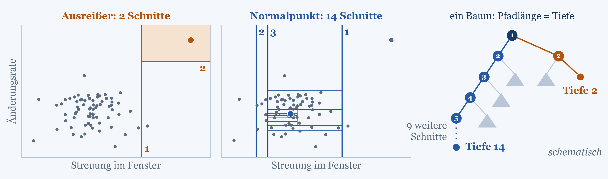
- Viele Bäume schneiden die Daten zufällig: zufälliges Merkmal, zufälliger Schnittpunkt
- Seltene Punkte sind nach wenigen Schnitten allein, Punkte im dichten Kern erst nach vielen
- Score: mittlere Pfadlänge über alle Bäume, kurz heißt ungewöhnlich
- Kein Label nötig, kein Abstandsmaß, keine Verteilungsannahme
Liu, Ting, Zhou (2012): Isolation-Based Anomaly Detection. ACM TKDD 6(1), Art. 3. DOI 10.1145/2133360.2133363
Teil VI · Anomalieerkennung
Isolation Forest in scikit-learn
from sklearn.ensemble import IsolationForest
train = feat.loc["2021-01-04":"2021-01-07"]
iso = IsolationForest(n_estimators=200, random_state=1)
iso.fit(train)
feat["score"] = -iso.score_samples(feat) # höher = ungewöhnlicher
- Anpassen auf einem Zeitraum vor dem bewerteten, nie auf dem ganzen Monat
- -score_samples liefert einen Score; die Schwelle setzen Sie selbst
- contamination setzt die Schwelle über einen geratenen Anomalieanteil: für den Vergleich der Detektoren ungeeignet
Teil VI · Anomalieerkennung
Prognose-Residuum als Score
- Ein Modell sagt den Normalwert voraus, der Score ist die Abweichung davon
- Das Modell kann alles nutzen, was zur Zeit t bekannt ist: Tageszeit, Kalender, Kontextgrößen
- Kennt das Modell den Kontext, wird eine kontextuelle Anomalie im Residuum zur Punktanomalie
- Jedes Prognosemodell aus den Teilen II bis V taugt, etwa LightGBM
Hundman et al. (2018): Detecting Spacecraft Anomalies Using LSTMs and Nonparametric Dynamic Thresholding. KDD 2018. DOI 10.1145/3219819.3219845
Teil VI · Anomalieerkennung
Kontextuelle Anomalien und Schwellen
- Eine feste Schwelle kennt keinen Kontext: Sie meldet, was absolut groß ist
- Was normal ist, hängt ab von Tageszeit, Wochentag, Feiertag, Marktlage
- Und vom System: Taugt eine Frequenzschwelle für jedes Synchrongebiet?
- Zwei Wege: Kontext ins Modell (Residuum als Score) oder Schwelle je Kontext
Teil VI · Anomalieerkennung
Schwelle je Kontext in pandas
local = score.index.tz_convert("Europe/Berlin")
train = score.loc[:"2023-12-31"]
train_hour = train.index.tz_convert("Europe/Berlin").hour
thr_by_hour = train.groupby(train_hour).quantile(0.999)
thr = thr_by_hour.reindex(local.hour).to_numpy()
alarm = score > thr
- Je Stunde des Tages ein eigenes Quantil aus dem Trainingszeitraum
- Stunde in lokaler Zeit, weil sich das Verhalten nach der Uhr richtet, nicht nach UTC
- Mehr Kontexte heißt weniger Daten je Schwelle: Das Quantil wird unsicher
Teil VI · Anomalieerkennung
Detektoren im Vergleich
| Verfahren |
Stark bei |
Schwach bei |
| Feste Schwelle |
Sollwert bekannt, Punktanomalien |
Kontext, langsame Verschiebung |
| Gleitender z-Score |
einfache Punktanomalien |
Ausreißer im Fenster, Saison |
| Robuster z-Score (MAD) |
Punktanomalien in unruhigen Daten |
Saison, konstante Werte |
| STL-Residuum |
kontextuell nach Tageszeit |
falsche Periode |
| CUSUM |
anhaltende kleine Verschiebung |
kurze Spitzen |
| Isolation Forest auf Fenstern |
Form und Unruhe im Fenster |
Drift, Erklärung |
| Prognose-Residuum |
kontextuell, viele Kontextgrößen |
schlechtes Modell |
Nur genannt: Matrix Profile findet ungewöhnliche Teilfolgen (Discords), braucht bei Sekundendaten aber viel CPU-Rechenzeit.
Yeh et al. (2016): Matrix Profile I: All Pairs Similarity Joins for Time Series. IEEE ICDM 2016. DOI 10.1109/ICDM.2016.0179
Teil VI · Anomalieerkennung
Punktweise oder je Ereignis bewerten
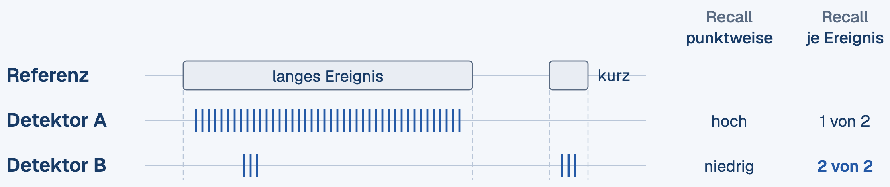
- Punktweise zählt jede Sekunde: Ein langes Ereignis zählt hundertfach, ein kurzes kaum
- Im Betrieb zählt, ob und wie früh ein Ereignis gemeldet wurde und wie viele Meldungen grundlos waren
- Deshalb: Alarme und Referenz zu Ereignissen zusammenfassen, dann zählen
- Vorsicht mit „Point Adjustment“: Ein einziger Treffer zählt für das ganze Ereignis und schönt die Werte
Tatbul et al. (2018): Precision and Recall for Time Series. NeurIPS 2018. arXiv 1803.03639; Bhattacharya et al. (2024): Towards Unbiased Evaluation of Time-series Anomaly Detector. arXiv 2409.13053
Teil VI · Anomalieerkennung
Ereignis-Precision, Ereignis-Recall, Latenz
- Ereignis-Precision: Anteil der Alarmereignisse, die ein Referenzereignis treffen; Ereignis-Recall: Anteil der Referenzereignisse, die gefunden werden
- Treffer: Ein Alarmereignis überlappt ein Referenzereignis, mit festgelegter Toleranz
- Latenz: erster Alarm minus Beginn des Referenzereignisses, angegeben als Median
- Ein früher Alarm vor dem Beginn zählt nur innerhalb der Toleranz
- Die Referenz ist selbst eine Regel, etwa Abweichung über 100 mHz; sagen Sie dazu, welche
Lavin, Ahmad (2015): Evaluating Real-time Anomaly Detection Algorithms: the Numenta Anomaly Benchmark. arXiv 1510.03336
Teil VI · Anomalieerkennung
Alarmbudget
- Wie viele Alarmereignisse je Woche kann der Betrieb prüfen? Diese Zahl kommt vom Betrieb, nicht vom Modell
- Wählen Sie die Schwelle so, dass das Budget im Validierungszeitraum eingehalten wird
- Dann vergleichen Sie Detektoren bei gleichem Budget: Wer findet mehr Ereignisse, wer früher?
- Das Budget gehört in die Schwellenpflege im Betrieb
Ein Detektor ist erst mit Schwelle ein Detektor. Vergleichen Sie Detektoren bei gleicher Alarmzahl je Woche, nicht bei gleicher Schwelle.
Teil VI · Anomalieerkennung
Zusammenfassung Anomalieerkennung
- Der Typ der Anomalie (Punkt, kontextuell, kollektiv) bestimmt den Detektor
- Jeder Detektor liefert einen Score; erst Schwelle und Ereignisbildung machen daraus Alarme, die jemand prüfen kann
- Median und MAD statt Mittelwert und σ, wenn Ausreißer im Fenster liegen
- Kontext gehört ins Modell oder in die Schwelle
- Bewertet wird je Ereignis, mit Latenz und bei festem Alarmbudget
Teil VII
Klassifikation auf Zeitreihen
VII
Sie erkennen seltene Ereignisse vorab: Label festlegen, Klassen gewichten und Modelle ehrlich bewerten.
Teil VII · Klassifikation auf Zeitreihen
Was Sie in diesem Teil lernen
Die Punkte folgen den Entscheidungen in einem Projekt: erst das Ereignis, dann das Modell, dann die Bewertung.
- Aus einer Zielgröße ein Ereignis machen: Label, Horizont, Vorwarnzeit
- Merkmale wählen: Fenstermerkmale wie in Teil VI
- Mit seltenen Klassen umgehen: Klassengewichte setzen statt raten
- Ehrlich bewerten: Precision-Recall-Kurve, Average Precision, Prävalenz-Baseline
- Zeitlich validieren, Wahrscheinlichkeiten prüfen, gegen Anomalieerkennung abgrenzen
Teil VII · Klassifikation auf Zeitreihen
Von der Regression zum Ereignis
Viele betriebliche Fragen lauten nicht „wie groß“, sondern „ob“: Überschreitet die Frequenzabweichung in der Stunde eine Grenze?
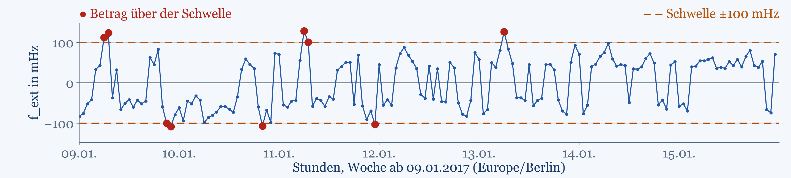
- Weg 1: f_ext (größte Abweichung von 50 Hz in der Stunde) als Zahl prognostizieren, danach die Schwelle anlegen
- Weg 2: direkt die Wahrscheinlichkeit lernen, dass die Schwelle überschritten wird
- Weg 2 lenkt die Modellkapazität auf den Bereich nahe der Grenze, nicht auf die vielen ruhigen Stunden
Teil VII · Klassifikation auf Zeitreihen
Beispielklassen im Übertragungsnetz
| Ereignis |
Regel für das Label |
Charakter |
| Starke Frequenzabweichung |
Betrag von f_ext (größte Abweichung von 50 Hz in der Stunde) über 100 mHz |
wiederkehrend, Hunderte Stunden |
| Sehr starke Frequenzabweichung |
Betrag von f_ext über 125 mHz |
selten |
| Netzauftrennung |
bekanntes Einzelereignis (08.01.2021) |
einmalig |
| Preisspitze der Ausgleichsenergie |
Preis über einer festen Grenze |
selten, gehäuft in Phasen |
| Negativer Day-ahead-Preis |
Preis unter null |
wiederkehrend, je Jahr verschieden |
Lernen lässt sich nur, was oft genug vorkommt. Ein Einzelereignis wie die Netzauftrennung ist ein Fall für die Anomalieerkennung, nicht für einen Klassifikator.
Teil VII · Klassifikation auf Zeitreihen
Stündliche Kennzahlen der Frequenzstabilität
- Je Stunde von 2015 bis 2019 vier Kennzahlen aus den Frequenzmessungen von TransnetBW: f_ext (Extremwert der Abweichung), f_rocof (Änderungsrate der Frequenz, ROCOF), f_msd (mittlere quadratische Abweichung), f_integral (Integral der Abweichung)
- Dazu 15 Merkmale, die schon am Vortag feststehen (Day-ahead), aus der ENTSO-E Transparency Platform
- Die vier Kennzahlen sind Zielgrößen, sie beschreiben, was in der Stunde passiert ist; Merkmale sind die Day-ahead-Größen
- 43.801 Stunden, davon 40.147 mit Wert für f_ext
- Aufbereitet und veröffentlicht von Kruse, Schäfer und Witthaut zur Frage, was Frequenzabweichungen treibt
Kruse, Schäfer, Witthaut (2021): Revealing drivers and risks for power grid frequency stability with explainable AI. Patterns 2(11), DOI 10.1016/j.patter.2021.100365. Daten: Zenodo, DOI 10.5281/zenodo.5118352
Teil VII · Klassifikation auf Zeitreihen
Label definieren
Das Modell braucht für jede Stunde eine Antwort: Ereignis ja oder nein. Diese Antwort ist das Label.
Label = 1, wenn die Frequenz in der Stunde mehr als 100 mHz von 50 Hz abweicht (Betrag von f_ext über 100 mHz), sonst 0
- Ergebnis: 1.039 von 40.147 Stunden sind Ereignisse, das sind 2,6 %
- Ob die Frequenz über 50,1 Hz steigt oder unter 49,9 Hz fällt: Beides ist ein Ereignis
- Stunden ohne Messwert bleiben leer, sie werden nicht zu 0
- Eine andere Grenze ergibt andere Ereignisse: Die Regel steht deshalb an einer Stelle im Code
Teil VII · Klassifikation auf Zeitreihen
Ereignisse nach Tageszeit
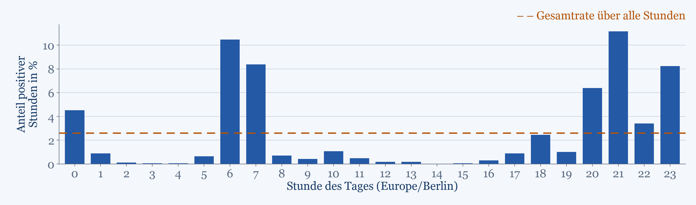
- Die Ereignisse häufen sich in den Stunden 6, 7, 20, 21 und 23: Dort sind 6 bis 11 % der Stunden positiv
- Die Tageszeit allein enthält also schon Information
- Daraus wird eine Baseline, die jedes Modell schlagen muss: Ereignisrate je Stunde des Tages als Score
Teil VII · Klassifikation auf Zeitreihen
Horizont und Vorwarnzeit
- Entscheidungszeit: wann das Modell rechnet und wer dann handelt
- Horizont: Abstand von der Entscheidungszeit bis zur Zielstunde
- Vorwarnzeit: wie viel Zeit die Maßnahme braucht; der Horizont muss mindestens so lang sein
- Labelfenster: „in der Zielstunde“ oder „in den nächsten k Stunden“; ein breites Fenster erhöht die Rate und verwischt den Zeitpunkt
Ein Merkmal darf nur ins Modell, wenn es zur Entscheidungszeit vorliegt (Teil IV).
Teil VII · Klassifikation auf Zeitreihen
Seltene Klassen
Im Frequenzdatensatz (Kontinentaleuropa 2015 bis 2019) weicht die Frequenz nur in 1.039 von 40.147 Stunden um mehr als 100 mHz ab, das sind 2,59 % mit Label 1. Im Training sieht das Modell also fast nur ruhige Stunden.
- Sagt das Modell immer „kein Ereignis“, liegt es in 97,41 % der Stunden richtig. Der Verlust ist damit schon klein, die seltenen Ereignisse lernt es kaum
- predict() setzt die Schwelle auf 0,5; bei seltenen Ereignissen liegt kaum eine Wahrscheinlichkeit so hoch
- Klassengewichte: Fehler bei der seltenen Klasse kosten im Training mehr
- Resampling: Mehrheit ausdünnen oder Minderheit vervielfachen; synthetische Punkte (SMOTE) zerstören die zeitliche Struktur
- Schwelle: mit Wahrscheinlichkeiten weiterarbeiten und die Grenze selbst wählen
Chawla et al. (2002): SMOTE: Synthetic Minority Over-sampling Technique. JAIR 16, DOI 10.1613/jair.953
Teil VII · Klassifikation auf Zeitreihen
Klassengewichte
Die positive Klasse bekommt im Verlust ein eigenes Gewicht w. Für binäre Klassifikation mit Binary Cross Entropy (BCE):
Übliche Wahl: das Verhältnis von negativen zu positiven Beispielen im Trainingszeitraum.
- Bei 39.108 zu 1.039 Stunden ergibt das für die positive Klasse w ≈ 37,6
- Das Gewicht verändert, wie das Modell trennt, und verschiebt dabei die Wahrscheinlichkeiten nach oben
- Das Gewicht aus dem Trainingszeitraum jedes Folds neu bestimmen, nicht aus dem ganzen Datensatz
Teil VII · Klassifikation auf Zeitreihen
LightGBM mit Klassengewicht
from lightgbm import LGBMClassifier
n_pos = int(y_train.sum())
n_neg = len(y_train) - n_pos
clf = LGBMClassifier(
n_estimators=500, learning_rate=0.05, num_leaves=31,
scale_pos_weight=n_neg / n_pos, # binär; class_weight für mehrere Klassen
random_state=1, verbose=-1,
)
clf.fit(X_train, y_train)
p_valid = clf.predict_proba(X_valid)[:, 1] # Wahrscheinlichkeit für Klasse 1
- scale_pos_weight ist der Hebel für den binären Fall; für mehrere Klassen empfiehlt die Dokumentation class_weight
- Weiter mit predict_proba, nicht mit predict
- Die Dokumentation warnt selbst: Mit Gewichten sind die einzelnen Wahrscheinlichkeiten schlecht geschätzt
LightGBM 4.7, Dokumentation zu LGBMClassifier, Parameter class_weight und scale_pos_weight
Teil VII · Klassifikation auf Zeitreihen
Precision, Recall und die PR-Kurve
- Precision: Wie viele Alarme waren echte Ereignisse?
- Recall: Für wie viele Ereignisse gab es einen Alarm?
- Beide zählen nur Alarme und Ereignisse; die vielen ruhigen Stunden (TN) kommen nicht vor
- Jede Schwelle ergibt einen Punkt; alle Schwellen zusammen ergeben die Precision-Recall-Kurve (PR-Kurve)
Teil VII · Klassifikation auf Zeitreihen
Average Precision
Die Average Precision (AP) fasst die PR-Kurve in einer Zahl zusammen: Precision an jeder Schwelle, gewichtet mit dem Zuwachs an Recall.
- Unabhängig von einer Schwelle: bewertet, wie gut das Modell Stunden nach Risiko ordnet
- scikit-learn rechnet ohne Interpolation; die Trapezfläche unter der PR-Kurve ist meist zu optimistisch
- ROC-AUC (Fläche unter der Receiver-Operating-Characteristic-Kurve) zählt die vielen TN mit und sieht bei seltenen Ereignissen besser aus, als der Betrieb es erlebt
scikit-learn 1.9, average_precision_score. Davis, Goadrich (2006), ICML, DOI 10.1145/1143844.1143874. Saito, Rehmsmeier (2015), PLOS ONE 10(3): e0118432, DOI 10.1371/journal.pone.0118432
Teil VII · Klassifikation auf Zeitreihen
Prävalenz-Baseline
Wer zufällig Alarm gibt, liegt so oft richtig, wie Ereignisse vorkommen: Die Precision ist dann im Mittel gleich der Ereignisrate π.
- Auch die AP liegt beim Raten bei etwa π, hier also bei 0,026
- Darum zählt die AP im Verhältnis zu π, nicht als nackte Zahl
- Zweite Baseline: Jede Stunde bekommt als Score, wie oft zu dieser Uhrzeit im Training ein Ereignis auftrat. Strenger: getrennt nach Uhrzeit und Monat
- AP immer zusammen mit π und den Baselines berichten, je Fold
Saito, Rehmsmeier (2015), PLOS ONE 10(3): e0118432, DOI 10.1371/journal.pone.0118432
Teil VII · Klassifikation auf Zeitreihen
PR-Kurve und AP in scikit-learn
from sklearn.metrics import average_precision_score, precision_recall_curve
precision, recall, thresholds = precision_recall_curve(y_valid, p_valid)
ap_model = average_precision_score(y_valid, p_valid)
# Tageszeit-Baseline: Ereignisrate je Stunde aus dem Training als Score
rate_by_hour = y_train.groupby(X_train["hour"]).mean()
p_hour = X_valid["hour"].map(rate_by_hour)
ap_hour = average_precision_score(y_valid, p_hour)
prevalence = y_valid.mean() # Zufallsniveau der AP
- thresholds hat einen Eintrag weniger als precision und recall; der letzte Punkt hat Recall 0
- Die Baseline lernt ihre Raten nur aus dem Training
- Alle drei Zahlen gehören in dieselbe Tabelle
Teil VII · Klassifikation auf Zeitreihen
Logistische Regression als Baseline-Modell
Das einfachste lernende Modell auf denselben Merkmalen wie LightGBM:
from sklearn.impute import SimpleImputer
from sklearn.linear_model import LogisticRegression
from sklearn.pipeline import make_pipeline
from sklearn.preprocessing import StandardScaler
logreg = make_pipeline(
SimpleImputer(strategy="median"), # Fehlwerte füllen
StandardScaler(), # Merkmale auf gleiche Skala
LogisticRegression(class_weight="balanced", max_iter=1000),
)
logreg.fit(X_train, y_train)
p_logreg = logreg.predict_proba(X_valid)[:, 1]
ap_logreg = average_precision_score(y_valid, p_logreg)
- Ein Gewicht je Merkmal, die Sigmoidfunktion macht daraus eine Wahrscheinlichkeit: p = σ(w·x + b)
- class_weight="balanced" gewichtet die seltene Klasse im selben Verhältnis wie scale_pos_weight bei LightGBM
- Alle Kandidaten gehören in dieselbe AP-Tabelle: Prävalenz, Tageszeit-Baseline, logistische Regression, LightGBM
Teil VII · Klassifikation auf Zeitreihen
Zeitliche Validierung
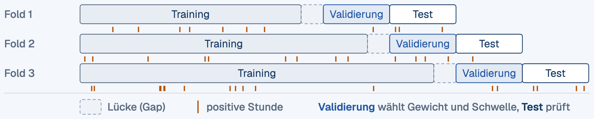
- Rolling-Origin wie in Teil III, nie zufällig mischen, kein stratifiziertes k-fold
- Ereignisse häufen sich in Phasen: Nachbarstunden im Training und im Test verraten die Zukunft, deshalb eine Lücke (Gap)
- Gewicht, Hyperparameter und Schwelle nur auf der Validierung wählen
- Die Ereignisrate schwankt von Jahr zu Jahr (124 bis 287 Stunden): AP je Fold mit der Prävalenz des Folds vergleichen
from sklearn.model_selection import TimeSeriesSplit
tscv = TimeSeriesSplit(n_splits=4, test_size=24 * 182, gap=48)
for train_idx, test_idx in tscv.split(X):
...
Teil VII · Klassifikation auf Zeitreihen
Kalibrierung, kurz
Eine Wahrscheinlichkeit ist kalibriert, wenn von allen Stunden mit 10 % Risiko etwa jede zehnte ein Ereignis hat.
- Prüfen mit dem Zuverlässigkeitsdiagramm: vorhergesagte Wahrscheinlichkeit gegen beobachteten Anteil
- Klassengewichte und Resampling verzerren die Wahrscheinlichkeiten nach oben
- Reparieren mit Platt-Skalierung (sigmoid) oder isotonischer Regression auf einem eigenen Zeitraum
- Nötig, wenn die Zahl selbst zählt: Risiko an den Betrieb, Summe erwarteter Ereignisse
from sklearn.calibration import calibration_curve
frac_pos, mean_pred = calibration_curve(y_valid, p_valid, n_bins=10, strategy="quantile")
Niculescu-Mizil, Caruana (2005), ICML, DOI 10.1145/1102351.1102430. van den Goorbergh et al. (2022), JAMIA 29(9), DOI 10.1093/jamia/ocac093
Teil VII · Klassifikation auf Zeitreihen
Anomalieerkennung oder Klassifikation: wann welches
| Frage |
Anomalieerkennung (Teil VI) |
Klassifikation |
| Labels |
keine oder sehr wenige |
genug positive Beispiele mit klarer Regel |
| Ereignistyp |
unbekannt, neu, vielgestaltig |
definiert und wiederkehrend |
| Ausgabe |
Abweichung vom Normalen |
Wahrscheinlichkeit für die definierte Klasse |
| Zeitpunkt |
während des Ereignisses oder kurz nach Beginn |
vorab, mit Vorwarnzeit |
| Bewertung |
je Ereignis, Latenz, Fehlalarmbudget |
PR-Kurve, AP, Kosten |
| Beispiel |
Netzauftrennung vom 08.01.2021 |
Stunden mit Betrag von f_ext über 100 mHz |
Beides zusammen: Der Detektor meldet das Unbekannte, der Klassifikator warnt vor dem Bekannten. Ein Anomalie-Score kann auch Merkmal des Klassifikators sein.
Teil VII · Klassifikation auf Zeitreihen
Zusammenfassung Klassifikation
- Eine fachliche Regel legt das Ereignis fest: Grenze, Betrag oder Vorzeichen, Lücken, Labelfenster
- Horizont und Vorwarnzeit kommen aus dem Betrieb; jedes Merkmal muss zur Entscheidungszeit vorliegen
- Fenstermerkmale mit Boosting zuerst; gelernte Filter (1D-Faltung) folgen in Teil VIII
- Klassengewichte im Training, predict_proba statt predict
- PR-Kurve und AP, immer neben Prävalenz und Tageszeit-Baseline
Teil VIII
Deep Learning
VIII
Sie sehen im Überblick, wie neuronale Netze für Zeitreihen lernen, wie sie sich an die Vergangenheit erinnern und wann sich der Mehraufwand gegenüber Boosting lohnt.
Teil VIII · Deep Learning
Was Sie in diesem Teil lernen
Ziel ist die Einordnung gegenüber Boosting, nicht das Training eigener Netze:
- Ein Netz aus Schichten: Multi-Layer-Perzeptron (MLP)
- Training: Loss, Gradientenabstieg, Batches, Epochen
- Netze mit Gedächtnis: rekurrente Netze (RNN) und ihre Varianten LSTM und GRU
- Ein Trainingsgerüst in PyTorch Lightning
- Faltungsnetze (CNN): gelernte Filter für lokale Muster
- Autoencoder als Detektor für Anomalien
- Wann sich Deep Learning lohnt und wann nicht
Teil VIII · Deep Learning
Multi-Layer-Perzeptron (MLP)
- Ein Neuron bildet eine gewichtete Summe seiner Eingaben, addiert einen Bias und schickt das Ergebnis durch eine Aktivierungsfunktion (meist ReLU: negative Werte werden 0)
- Ein MLP stapelt Schichten solcher Neuronen, jede voll mit der nächsten verbunden
- Für Zeitreihen: Eingabe sind die Lags wie bei LightGBM, etwa die Last der letzten 168 Stunden; Ausgabe sind die nächsten 24 Stunden
- Das MLP sieht die Lags als ungeordnete Merkmale, die Reihenfolge kennt es nicht
Teil VIII · Deep Learning
Training: Loss, Gradientenabstieg, Batches, Epochen
- Loss: misst den Fehler der Ausgabe, für Prognosen meist als mittleren quadratischen Fehler (MSE) oder mittleren absoluten Fehler (MAE)
- Gradientenabstieg: Backpropagation bestimmt mit der Kettenregel, wie stark jedes Gewicht den Loss verändert; jedes Gewicht wandert ein Stück entgegen seinem Gradienten
- Batch: Ein Schritt nutzt nicht alle Fenster, sondern einen Stapel von z. B. 64 Fenstern
- Epoche: einmal durch alle Trainingsfenster; trainiert wird über mehrere Epochen
- Der Optimierer Adam passt die Schrittweite je Gewicht an und ist der übliche Startpunkt
Kingma, Ba (2015): Adam: A Method for Stochastic Optimization, arXiv:1412.6980
Teil VIII · Deep Learning
Rekurrentes Netz (RNN): ein Zustand als Gedächtnis
- Das RNN liest die Reihe Schritt für Schritt und trägt einen versteckten Zustand h von Schritt zu Schritt weiter
- In jedem Schritt verrechnet es den alten Zustand mit der neuen Eingabe
- Alle Zeitschritte teilen sich dieselben Gewichte, die Reihenfolge ist damit eingebaut
- Die Prognose entsteht aus dem letzten Zustand, etwa über eine lineare Schicht
Teil VIII · Deep Learning
Backpropagation Through Time (BPTT)
- Für das Training wird das RNN über alle Zeitschritte entfaltet und wie ein sehr tiefes Netz behandelt
- Der Gradient für einen frühen Zustand ist ein Produkt: ein Faktor je Zeitschritt bis zum Loss
- Bei 168 Stunden Kontext stehen 168 solche Faktoren im Produkt
- In der Praxis wird oft nach einer festen Fensterlänge abgeschnitten (truncated BPTT)
Teil VIII · Deep Learning
Verschwindende und explodierende Gradienten
- Sind die Faktoren im Produkt meist kleiner als 1, schrumpft der Gradient exponentiell mit dem Abstand zum Loss
- Frühe Zeitschritte bekommen dann kaum Lernsignal: Was vor einer Woche geschah, lernt das RNN nicht
- Sind die Faktoren größer als 1, wächst der Gradient, der Loss wird nan und das Modell ist unbrauchbar
- Gegen explodierende Gradienten hilft Gradient Clipping (die Norm des Gradienten vor jedem Schritt begrenzen), gegen verschwindende nicht
# Trainer aus PyTorch Lightning, der Aufbau folgt gleich
trainer = L.Trainer(accelerator="cpu", gradient_clip_val=1.0)
Bengio, Simard, Frasconi (1994): Learning Long-Term Dependencies with Gradient Descent is Difficult, IEEE Transactions on Neural Networks 5(2), doi:10.1109/72.279181
Teil VIII · Deep Learning
LSTM und GRU: Gates gegen das Vergessen
- LSTM führt einen eigenen Zellzustand C neben h und steuert ihn mit drei Gates: Forget, Input, Output
- Der Zellzustand wird additiv statt multiplikativ fortgeschrieben, der Gradient bleibt dadurch über viele Schritte erhalten
- GRU kommt mit zwei Gates aus (Reset, Update) und ohne eigenen Zellzustand, hat weniger Parameter und erreicht oft eine ähnliche Güte
|
LSTM |
GRU |
| Gates |
3 |
2 |
| Zellzustand |
ja |
nein |
| Parameter |
mehr |
weniger |
Hochreiter, Schmidhuber (1997): Long Short-Term Memory, Neural Computation 9(8), doi:10.1162/neco.1997.9.8.1735 · Cho et al. (2014): Learning Phrase Representations using RNN Encoder-Decoder, arXiv:1406.1078
Teil VIII · Deep Learning
LSTM-Zelle und GRU-Zelle
LSTM: Forget, Input und Output Gate steuern den Zellzustand C
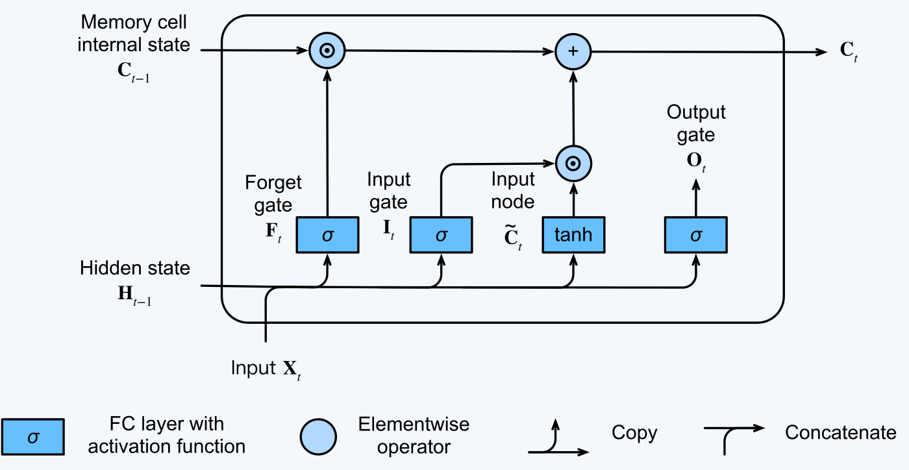
GRU: Reset und Update Gate wirken direkt auf den Hidden State H
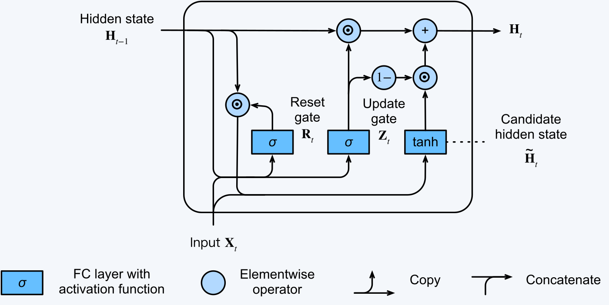
- σ: Schicht mit Sigmoid, Ausgabe zwischen 0 und 1; ⊙: elementweise Multiplikation
- Der Weg oben durch die Zelle (C bei LSTM, H bei GRU) hat nur ⊙ und +: Darüber bleibt Information über viele Schritte erhalten
Abbildungen: Zhang, Lipton, Li, Smola: Dive into Deep Learning, Kap. 10.1 und 10.2, d2l.ai (CC BY-SA 4.0)
Teil VIII · Deep Learning
PyTorch Lightning: Modell und Training
import lightning as L
from torch import nn, optim
from torch.utils.data import DataLoader, TensorDataset
class LSTMForecaster(L.LightningModule):
def __init__(self, hidden=32, horizon=24):
super().__init__()
self.lstm = nn.LSTM(input_size=1, hidden_size=hidden, batch_first=True)
self.head = nn.Linear(hidden, horizon)
def forward(self, x): # x: (batch, 168, 1)
out, _ = self.lstm(x)
return self.head(out[:, -1]) # letzter Zustand -> 24 Werte
def training_step(self, batch, batch_idx):
x, y = batch
loss = nn.functional.mse_loss(self(x), y)
self.log("train_loss", loss)
return loss
def configure_optimizers(self):
return optim.Adam(self.parameters(), lr=1e-3)
L.seed_everything(1)
loader = DataLoader(TensorDataset(X_train, Y_train), batch_size=64, shuffle=True)
trainer = L.Trainer(accelerator="cpu", max_epochs=10)
trainer.fit(LSTMForecaster(), train_dataloaders=loader)
Teil VIII · Deep Learning
Sequenzklassifikation: ein Fenster, eine Klasse
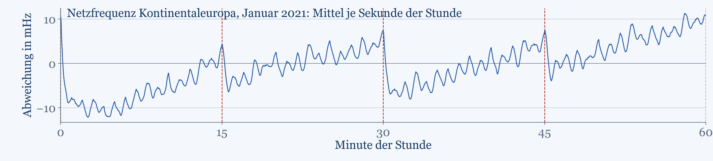
- Aufgabe: Ein Fenster fester Länge geht als Folge in das Netz, heraus kommt eine Klasse
- Strom wird in Stunden- und Viertelstundenblöcken gehandelt. Zu Beginn eines Blocks ändert sich die geplante Erzeugung, die Frequenz springt: deterministische Frequenzabweichung
- Klassen je Fenster von vier Minuten: Stundenwechsel, Viertelstundenwechsel, kein Wechsel
Kruse, Schäfer, Witthaut (2021): Exploring deterministic frequency deviations with explainable AI, arXiv:2106.09538
Teil VIII · Deep Learning
Gelernte Repräsentation: 1D-Faltung
Statt von Hand gewählter Kennzahlen lernt ein Faltungsnetz (Convolutional Neural Network, CNN) kleine Filter, die über das Fenster gleiten.
- Ein Filter mit K Gewichten erkennt ein lokales Muster, etwa eine steile Rampe oder einen Sprung
- Viele Filter ergeben viele Merkmalskarten (Feature Maps); Pooling fasst sie zu einem Vektor zusammen
- Eine letzte Schicht macht daraus eine Wahrscheinlichkeit für das Ereignis
Teil VIII · Deep Learning
1D-Faltung an einem Zahlenbeispiel
Der Filter w = (−1, 0, 1) mit b = 0 gleitet über sieben Werte x. Die Reihe steht erst bei 2 und steigt dann von t = 2 bis t = 4 auf 8: Dieser Anstieg ist die Rampe.
| t |
0 |
1 |
2 |
3 |
4 |
5 |
6 |
| Eingang xₜ |
2 |
2 |
2 |
5 |
8 |
8 |
8 |
| Merkmalskarte zₜ |
0 |
3 |
6 |
3 |
0 |
|
|
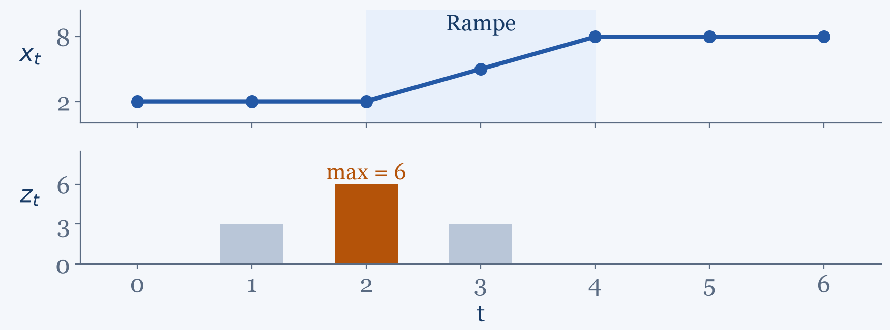
- Jeder Wert zₜ verrechnet drei Eingangswerte ab Position t: z₂ = −1 · x₂ + 0 · x₃ + 1 · x₄ = −2 + 0 + 8 = 6
- Auf dem flachen Stück ist z = 0, mitten in der Rampe am größten: Der Filter misst die Steigung über zwei Schritte
- Sieben Werte, Filterlänge drei: Die Merkmalskarte hat 7 − 3 + 1 = 5 Werte. Mit padding=1 bliebe sie bei sieben
- Max-Pooling behält nur den größten Wert der Merkmalskarte, hier 6. Das Netz erfährt: Im Fenster steigt die Reihe irgendwo steil an. Wo genau, geht dabei verloren
Teil VIII · Deep Learning
1D-Faltung in PyTorch
import torch
from torch import nn
torch.manual_seed(1)
model = nn.Sequential(
nn.Conv1d(in_channels=4, out_channels=16, kernel_size=5, padding=2), nn.ReLU(),
nn.Conv1d(16, 16, kernel_size=5, padding=2), nn.ReLU(),
nn.AdaptiveMaxPool1d(1), nn.Flatten(),
nn.Linear(16, 1), # ein Logit je Fenster
)
loss_fn = nn.BCEWithLogitsLoss(pos_weight=torch.tensor([37.6]))
x = torch.randn(32, 4, 48) # Batch, Kanäle, Zeitschritte
loss = loss_fn(model(x).squeeze(1), torch.zeros(32))
- Lohnt bei langen Rohsignalen (Sekundenwerte) und vielen Ereignissen, wenn gute Merkmale schwer von Hand zu finden sind
- Bei Tabellen mit Stundenwerten und gut tausend positiven Stunden zuerst Fenstermerkmale mit Boosting
- Zufällige Faltungsfilter mit linearem Modell (ROCKET) sind eine schnelle Zwischenstufe
Wang, Yan, Oates (2017), IJCNN, DOI 10.1109/IJCNN.2017.7966039. Ismail Fawaz et al. (2019), Data Min. Knowl. Discov. 33, DOI 10.1007/s10618-019-00619-1. Dempster, Petitjean, Webb (2020), ROCKET, Data Min. Knowl. Discov. 34, DOI 10.1007/s10618-020-00701-z
Teil VIII · Deep Learning
GRU-Klassifikator in PyTorch Lightning
class GRUClassifier(L.LightningModule):
def __init__(self, n_inputs=3, hidden=32, n_classes=3, class_weights=None):
super().__init__()
self.conv = nn.Sequential(nn.Conv1d(n_inputs, 16, kernel_size=7, padding=3), nn.ReLU())
self.gru = nn.GRU(16, hidden, batch_first=True)
self.head = nn.Sequential(nn.Dropout(0.3), nn.Linear(hidden, n_classes))
self.loss = nn.CrossEntropyLoss(weight=class_weights)
def forward(self, x): # x: (batch, 120, 3)
z = self.conv(x.transpose(1, 2)).transpose(1, 2)
_, h = self.gru(z)
return self.head(h[-1]) # letzter Hidden State -> 3 Klassen
- Eingabe je Schritt: Abweichung, Änderung zum Schritt davor, Stunde des Tages; 240 Sekunden auf 120 Schritte gemittelt
- Conv1d bildet lokale Muster, das GRU liest ihre Folge, der letzte Hidden State fasst das Fenster zusammen
- Die Klassengewichte im Loss wirken wie class_weight="balanced" bei LightGBM
- Vergleich: LightGBM auf Kennzahlen je Fenster, trainiert und getestet auf denselben Zeiträumen. Das GRU lohnt sich nur, wenn es besser ist
Teil VIII · Deep Learning
Autoencoder: Rekonstruktionsfehler als Anomalie-Score
- Ein Autoencoder presst ein Fenster durch einen Bottleneck und baut es wieder auf
- Auf unauffälligen Fenstern trainiert, lernt er nur das Normale
- Ein Fenster, das er schlecht rekonstruiert, ist verdächtig: Der Fehler ist der Score
- Danach gilt der Rahmen aus Teil VI unverändert: Score, Schwelle, Alarm, Ereignis
- Mit LSTM-Schichten in Encoder und Decoder erfasst der Autoencoder auch zeitliche Muster im Fenster
Teil VIII · Deep Learning
Wann sich Deep Learning lohnt
Eher lohnend
- Viele parallele Reihen, gemeinsam trainiert (Teil IX)
- Lange Historie in hoher Auflösung, etwa Sekundendaten
- Rohe Signale, für die sich Merkmale schwer von Hand bauen lassen
- GPU und Zeit für Tuning vorhanden
- Wenige Reihen mit einigen Jahren Stundenwerten
- Gute Merkmale aus Lags, Kalender und exogenen Prognosen liegen vor: Dann ist LightGBM schwer zu schlagen
- Nur CPU, wenig Zeit, Erklärbarkeit gefordert
Jedes Netz muss zuerst die saisonale Baseline und das Boosting-Modell im selben Backtest schlagen.
Makridakis, Spiliotis, Assimakopoulos (2022): M5 accuracy competition, International Journal of Forecasting 38(4), doi:10.1016/j.ijforecast.2021.11.013 · Zeng et al. (2023): Are Transformers Effective for Time Series Forecasting?, arXiv:2205.13504
Teil IX
Globale Modelle und Foundation Models
IX
Ein Modell lernt aus vielen Reihen zugleich statt eines je Reihe, und vortrainierte Modelle sagen eine Reihe ohne eigenes Training vorher.
Teil IX · Globale Modelle und Foundation Models
Was Sie in diesem Teil lernen
Was tun Sie, wenn eine einzelne Reihe zu wenig Daten für ein eigenes Modell hat?
- Lokal gegen global: ein Modell je Reihe oder eines für alle
- Reihen-ID, Cross-Learning und der Cold Start einer neuen Reihe
- Ein globales LightGBM-Modell mit MLForecast
- Foundation Models: Chronos zero-shot, also ohne Training auf Ihren Daten
- Nutzen und Grenzen vortrainierter Modelle
- Welche vortrainierten Modelle es gibt und unter welcher Lizenz
Teil IX · Globale Modelle und Foundation Models
Lokal gegen global
- Lokal: ein Modell je Reihe, jedes lernt nur aus seiner eigenen Historie (Seasonal Naive, AutoETS, ein LightGBM je Zone)
- Global: ein Modell, gemeinsam auf allen Reihen trainiert; jede Zeile der Trainingstabelle gehört zu einer Reihe
- Typischer Fall: die Netzlast der vier deutschen Regelzonen 50Hertz, Amprion, TenneT und TransnetBW als parallele Reihen
- Alle vier Zonen haben denselben Tages- und Wochengang, nur auf unterschiedlicher Höhe. Ein globales Modell lernt diesen gemeinsamen Verlauf aus allen vier Zonen zugleich, also aus viermal so vielen Daten wie ein lokales
Montero-Manso, Hyndman (2021): Principles and algorithms for forecasting groups of time series: Locality and globality, International Journal of Forecasting 37(4), doi:10.1016/j.ijforecast.2021.03.004
Teil IX · Globale Modelle und Foundation Models
Reihen-ID und Cross-Learning
- Daten im Langformat: eine Spalte für die Reihe (unique_id), eine für die Zeit (ds), eine für den Wert (y)
| unique_id |
ds (UTC) |
lag168 |
y |
| amprion |
04.03.2024 07:00 |
24.141 |
23.414 |
| transnetbw |
04.03.2024 07:00 |
8.471 |
8.493 |
- Cross-Learning: Weil alle Reihen in einer Tabelle stehen, lernt ein Modell Muster wie Tagesgang, Feiertagseffekt oder Reaktion auf Temperatur aus allen Reihen zugleich
- Die Reihen-ID als Merkmal: Die Spalte unique_id geht kategorial ins Modell, neben lag168 und den übrigen Merkmalen. So lernt es Eigenheiten je Reihe, etwa dass Amprion fast dreimal so hoch liegt wie TransnetBW
- Eine Skalierung je Reihe gleicht unterschiedliche Niveaus aus, sonst dominiert die größte Zone; MLForecast rechnet die Prognose danach automatisch zurück
Teil IX · Globale Modelle und Foundation Models
Cold Start: eine neue Reihe ohne Historie
- Eine neue Messstelle, eine neu zugeschnittene Zone, ein neues Produkt: Ein lokales Modell hat nur die eigene kurze Historie
- Ein globales Modell überträgt, was es auf den anderen Reihen gelernt hat; es braucht aber so viel Historie, wie die Lags verlangen (Lag 168: eine Woche)
- Eine unbekannte Reihen-ID hilft dem Modell nicht; dann müssen die gemeinsamen Merkmale die Prognose tragen
- Ein Foundation Model braucht gar kein Training auf Ihren Daten, nur einen Kontext aus der neuen Reihe
Offene Frage: Welcher Weg liegt bei wenigen Wochen Historie vorn, ein lokales Modell, ein globales oder ein vortrainiertes?
Teil IX · Globale Modelle und Foundation Models
Ein globales LightGBM-Modell mit MLForecast
from lightgbm import LGBMRegressor
from mlforecast import MLForecast
fcst = MLForecast(
models=[LGBMRegressor(n_estimators=500, learning_rate=0.05,
random_state=1, verbosity=-1)],
freq="h",
lags=[24, 168],
date_features=["hour", "dayofweek"],
)
fcst.fit(df) # df: unique_id, ds, y für alle Zonen
pred = fcst.predict(h=24) # 24 Stunden je Zone
- Ein Modell, eine Trainingstabelle aus allen Zonen; Lags werden je Reihe gebildet, nie über Reihengrenzen hinweg
- cross_validation liefert den Rolling-Origin-Backtest wie in statsforecast
Teil IX · Globale Modelle und Foundation Models
Foundation Models: Chronos zero-shot
- Vortrainiert auf sehr vielen Reihen aus vielen Domänen und auf synthetischen Reihen
- Zero-shot: Sie übergeben einen Kontext aus Ihrer Reihe und bekommen eine Prognose, ohne Training und ohne Merkmale
- Chronos skaliert die Reihe, zerlegt sie in Tokens und sagt die Fortsetzung wie ein Sprachmodell voraus
- Chronos-Bolt sagt direkt Quantile für mehrere Schritte voraus, ist deutlich schneller und läuft auf der CPU
- Ausgabe: Quantile (etwa 10 %, 50 %, 90 %), also ein Band statt einer einzelnen Linie
Ansari et al. (2024): Chronos: Learning the Language of Time Series, arXiv:2403.07815 · Chronos-Bolt: github.com/amazon-science/chronos-forecasting
Teil IX · Globale Modelle und Foundation Models
Chronos-Bolt: Prognose mit Quantilen
import torch
from chronos import BaseChronosPipeline
pipeline = BaseChronosPipeline.from_pretrained(
"amazon/chronos-bolt-tiny", # im Kurs: lokaler Ordner mit den Gewichten
device_map="cpu",
dtype=torch.float32,
)
context = torch.tensor(load_zone[-672:], dtype=torch.float32) # vier Wochen
quantiles, mean = pipeline.predict_quantiles(
context,
prediction_length=24,
quantile_levels=[0.1, 0.5, 0.9],
)
# quantiles: (1, 24, 3) -> 10 %, 50 %, 90 % je Stunde
Teil IX · Globale Modelle und Foundation Models
Chronos-Bolt: Quantilprognose der Netzlast
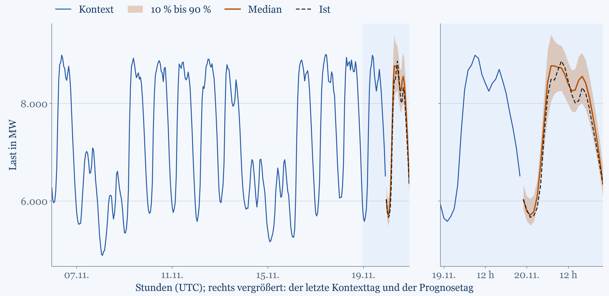
Teil IX · Globale Modelle und Foundation Models
Nutzen und Grenzen
Nutzen
- Eine Baseline ohne Vorarbeit: ohne Merkmale, ohne Training, ohne Tuning
- Eine Prognose für Reihen mit kurzer Historie
- Quantile ohne Zusatzaufwand
- Ein schneller Gegner für jedes eigene Modell im Backtest
- Chronos-Bolt nutzt keine exogenen Größen (Wetterprognose, Feiertage, Fahrplan); es sieht nur die Reihe selbst
- Kein Domänenwissen über Netzbetrieb, Marktregeln oder angekündigte Ereignisse
- Ob die Trainingsdaten Ihre Art von Reihe enthielten, wissen Sie nicht
- Auch Chronos-Bolt muss durch denselben Backtest wie alle anderen Modelle
Teil IX · Globale Modelle und Foundation Models
Foundation Models im Vergleich
Vortrainierte Modelle, die ohne Training auf Ihren Daten prognostizieren. Für den Einsatz entscheiden Lizenz und Ort der Daten:
| Modell |
Anbieter |
Lizenz der Gewichte |
Ausgabe |
| Chronos, Chronos-Bolt |
Amazon |
Apache 2.0, lokal |
Quantile |
| Moirai |
Salesforce |
CC BY-NC 4.0 (nicht kommerziell), lokal |
Verteilung, mehrere Variablen |
| TimesFM |
Google |
Apache 2.0, lokal |
Punktprognose, ab 2.5 Quantile |
| TimeGPT |
Nixtla |
nur über Cloud-API |
Prognose mit Intervallen |
Moirai scheidet wegen der nicht kommerziellen Lizenz für den Einsatz im Unternehmen aus. Bei TimeGPT gehen die Messdaten an einen externen Dienst.
Woo et al. (2024): Unified Training of Universal Time Series Forecasting Transformers, arXiv:2402.02592 · Das et al. (2024): A decoder-only foundation model for time-series forecasting, arXiv:2310.10688 · Garza, Mergenthaler-Canseco (2023): TimeGPT-1, arXiv:2310.03589 · Modellkarten auf Hugging Face, Stand 21.11.2026
Teil IX · Globale Modelle und Foundation Models
Zusammenfassung: globale Modelle und Foundation Models
- Ein globales Modell lernt aus allen verwandten Reihen zugleich; Lags werden je Reihe gebildet
- Die Reihen-ID hilft bei bekannten Reihen, nicht bei einer neuen
- Ein Foundation Model prognostiziert zero-shot aus dem Kontext, ohne exogene Größen
- Beide Wege müssen die saisonale Baseline im selben Backtest schlagen
Für eine neue Reihe mit kurzer Historie bleibt die Frage: lokal, global oder vortrainiert? Entscheiden muss der Backtest.
Teil X
Modellauswahl und Betrieb
X
Sie wählen das Modell von der Entscheidung her, die daran hängt, und überwachen Prognosen und Alarme im laufenden Betrieb.
Teil X · Modellauswahl und Betrieb
Was Sie in diesem Teil lernen
Erst wählen Sie das Modell aus, dann halten Sie es im Betrieb aktuell:
- Die Modellwahl aus Horizont, Metrik und Kostenasymmetrie ableiten
- Modellfamilien nach Ausgangslage einordnen
- Drift in Netz- und Marktdaten erkennen und den Rhythmus für Retraining festlegen
- Den Backtest im Betrieb weiterführen und Alarmschwellen pflegen
- Genauigkeit gegen Komplexität und Wartbarkeit abwägen
Teil X · Modellauswahl und Betrieb
Entscheidung vor dem Modell
- Horizont und Ausgabezeitpunkt: Wann muss die Prognose vorliegen, und welche Eingaben gibt es zu diesem Zeitpunkt?
- Metrik: MASE gegen die saisonale Baseline für Prognosen; ereignisbasierte Precision, Recall und Latenz für Alarme
- Kostenasymmetrie: Was kostet ein verpasstes Ereignis, was ein Fehlalarm? Daraus folgt die Schwelle
- Gegner: Die saisonale Baseline ist die Untergrenze, die veröffentlichte Prognose der faire starke Gegner
Erst wenn diese vier Punkte schriftlich feststehen, lohnt sich der Vergleich von Modellfamilien.
Teil X · Modellauswahl und Betrieb
Modellfamilie nach Ausgangslage
| Ausgangslage |
Erste Wahl |
Grund |
| Eine Reihe, kurzer Horizont, wenige Exogene |
Seasonal Naive, AutoETS, MSTL |
schnell, robust, oft schwer zu schlagen |
| Viele Merkmale, exogene Prognosen, fester Horizont |
LightGBM, direkt je Horizont |
stark bei tabellarischen Merkmalen; extrapoliert nicht über den Trainingsbereich hinaus |
| Mehrere verwandte Reihen |
globales Modell mit Reihen-ID |
lernt Muster über Reihen hinweg |
| Neue Reihe ohne Historie |
globales Modell oder Foundation Model zero-shot |
Cold Start |
| Seltenes Ereignis |
Klassifikator mit Klassengewichten, Schwelle aus Kosten |
Bewertung über Precision-Recall |
| Lange Horizonte, viele Reihen, gemischte Eingaben |
Deep Learning prüfen |
nur wenn der Abstand zur Baseline den Aufwand rechtfertigt |
Makridakis, Spiliotis, Assimakopoulos 2018, The M4 Competition: Results, findings, conclusion and way forward, International Journal of Forecasting 34(4), doi:10.1016/j.ijforecast.2018.06.001 · Zeng et al. 2023, Are Transformers Effective for Time Series Forecasting?, arXiv:2205.13504
Teil X · Modellauswahl und Betrieb
Drift in Netz- und Marktdaten
| Art |
Was sich ändert |
Beispiel |
Woran Sie es erkennen |
| Daten-Drift |
Verteilung der Eingaben |
Zubau von Wind und Photovoltaik: Residuallast unter 20 GW in 742 Stunden 2019, 2.344 Stunden 2025 |
Merkmalsverteilung gegen ein Referenzfenster (Population Stability Index, Kolmogorov-Smirnov-Test) |
| Label-Drift |
Häufigkeit des Ziels |
negative Day-ahead-Preise: 211 Stunden 2019, 573 Stunden 2025 |
Ereignisrate je Monat gegen die Rate, für die die Schwelle gewählt wurde |
| Concept-Drift |
Zusammenhang von Eingabe und Ziel |
Preisregime 2022 gegen 2023 (Teil I) |
rollender Fehler gegen die Baseline, sobald Ist-Werte vorliegen |
Prognosen haben einen Vorteil: Die Ist-Werte kommen nach Stunden, nicht nach Monaten. Der rollende MASE je Woche ist das wichtigste Drift-Signal.
Gama et al. 2014, A survey on concept drift adaptation, ACM Computing Surveys 46(4), doi:10.1145/2523813 · Rabanser, Günnemann, Lipton 2019, Failing Loudly, arXiv:1810.11953
Teil X · Modellauswahl und Betrieb
Retraining und Backtest im Betrieb
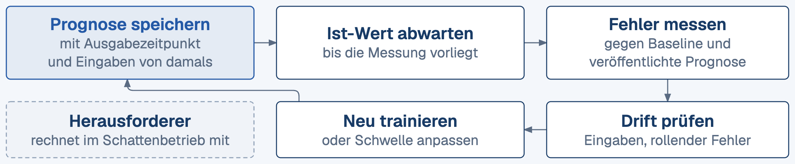
- Fester Rhythmus als Standard: regelmäßig mit rollendem Fenster neu fitten; bei Sekunden je Fit kostet das wenig
- Zusätzliche Auslöser: rollender Fehler über der Grenze, Regimewechsel, neue oder geänderte Datenquelle
- Backtest läuft weiter: jede Prognose mit Ausgabezeitpunkt und den damals verfügbaren Eingaben speichern
- Herausforderer im Schattenbetrieb: Das neue Modell rechnet mit und ersetzt das laufende erst ab einem vereinbarten Vorsprung
Teil X · Modellauswahl und Betrieb
Schwellenpflege für Alarme
- Alarmbudget überwachen: Alarme je Woche am vereinbarten Budget messen; eine Abweichung ist das erste Drift-Signal des Detektors
- Kalibrierung nachziehen, wenn sich die Ereignisrate ändert: dasselbe Kostenverhältnis, Schwelle auf aktuellen Daten prüfen
- Kontext statt fester Grenze: Schwelle je Tageszeit oder Regime, Residuum eines Prognosemodells als Score
- Neues Gebiet, neue Schwelle: aus der Verteilung des Gebiets bestimmen, nicht übernehmen (Kontinentaleuropa 100 mHz, Nordic 150 mHz)
- Rückmeldung der Systemführung als Label: bestätigt, Fehlalarm, verpasst
Eine Schwelle ist eine Betriebsentscheidung. Halten Sie Datum, Kostenverhältnis und erwartete Alarmzahl fest.
Teil X · Modellauswahl und Betrieb
Genauigkeit, Komplexität, Wartbarkeit
|
Seasonal Naive, ETS, MSTL |
LightGBM |
Deep Learning |
Foundation Model |
| Genauigkeit |
Messlatte |
stark mit guten Merkmalen |
nur mit viel Daten und Tuning |
zero-shot nutzbar, Abstand im eigenen Backtest prüfen |
| Rechenaufwand |
gering |
gering |
hoch, meist GPU |
Inferenz auf CPU möglich |
| Pflege |
kaum Parameter |
Merkmalspipeline, Verfügbarkeit der Eingaben |
Training, Versionen, Hardware |
Modellversion, Kontextlänge, Lizenz |
| Erklärbarkeit |
Komponenten sichtbar |
Merkmalswichtigkeit |
gering |
gering |
Ein Modell muss seinen Mehraufwand gegenüber der Baseline im Backtest rechtfertigen. Jede zusätzliche Komponente ist eine zusätzliche Fehlerquelle im Betrieb.
Teil XI
Abschluss
XI
Sie übertragen das Vorgehen auf Ihre eigenen Reihen und sehen, wohin sich das Fachgebiet entwickelt.
Teil XI · Abschluss
Übertragung auf Ihre Daten
- Welche Entscheidung hängt an der Prognose oder am Alarm, und bis wann muss sie fallen?
- Welcher Horizont, welcher Takt? Welche Eingaben liegen zum Ausgabezeitpunkt vor?
- Welche Baseline ist die Messlatte, welche vorhandene Prognose der Gegner?
- Was ist ein Ereignis: Regel für das Label, Vorwarnzeit, Häufigkeit je Jahr?
- Was kosten Fehlalarm und verpasstes Ereignis, und wer legt das Verhältnis fest?
- Wo liegen Zeitumstellung, Lücken und Regimewechsel in Ihrer Historie?
Teil XI · Abschluss
Roadmap für ein Analyseteam
- Fragestellung wählen: eine Prognose oder einen Alarm, an dem eine Entscheidung hängt; Metrik und Kostenverhältnis mit dem Fachbereich festlegen
- Datenpfad mit Ausgabezeitpunkt: Eingaben und Prognosen versioniert speichern, Zeitstempel in UTC, Lieferzeitpunkt je Quelle
- Backtest-Gerüst einmal bauen: Rolling-Origin mit Gap, saisonale Baseline, vorhandene Prognose als Gegner; dasselbe für alle späteren Modelle
- Ein Modell gegen die Baseline: LightGBM mit shift-korrekten Merkmalen für die Prognose, ein Detektor mit Alarmbudget für den Alarm
- Schattenbetrieb mit Überwachung: rollender Fehler, Alarme je Woche, Rückmeldungen als Labels
- Erst dann ausbauen: globales Modell über Regelzonen, Foundation Model für neue Reihen, Ensembles; Klassifikator, sobald genug Labels vorliegen
Schritt 2 und 3 sind die teuersten und die wertvollsten: Jedes spätere Modell nutzt sie unverändert.
Teil XI · Abschluss
Ausblick: Attention und Transformer
- Jede Position im Kontextfenster gewichtet alle anderen: Query fragt, Key bietet an, Value liefert
- Keine Rekurrenz: parallel trainierbar, direkter Weg zwischen weit entfernten Zeitpunkten; der Aufwand wächst quadratisch mit der Kontextlänge
- Für Zeitreihen: Abschnitte (Patches) statt Einzelwerte als Tokens; Grundlage der meisten Foundation Models, auch von Chronos
- Aber: Bei Prognosen bis 720 Schritte voraus (Strom, Verkehr, Wetter) war ein einfaches lineares Modell meist genauer als mehrere Transformer-Modelle (Zeng et al. 2023)
Vaswani et al. 2017, Attention Is All You Need, arXiv:1706.03762 · Nie et al. 2023, A Time Series is Worth 64 Words (PatchTST), arXiv:2211.14730 · Ansari et al. 2024, Chronos, arXiv:2403.07815 · Zeng et al. 2023, arXiv:2205.13504
Teil XI · Abschluss
Ausblick: multivariat, Wetterensembles, Kausalität
Multivariate Foundation Models
Mehrere Reihen und Kovariaten gemeinsam statt einzeln: Moirai verarbeitet beliebig viele Variablen, Chronos-2 nimmt Kovariaten auf. Für Netzbetreiber: Last, Einspeisung und Preis in einem Kontext.
Wetterensembles
Die Ensemblevorhersage des ECMWF liefert 51 Läufe (ein Kontrolllauf, 50 gestörte). Jeder Lauf ergibt eine Last- oder Einspeiseprognose, alle zusammen eine Verteilung statt eines Punkts: Quantile für die Reserveplanung.
Kausalität
Granger-Kausalität fragt, ob die Vergangenheit von X die Prognose von Y verbessert. PCMCI testet bedingte Unabhängigkeit über viele Reihen und Lags. Nutzen: die Ursache eines Alarms eingrenzen, Merkmale mit stabiler Wirkung wählen.
Woo et al. 2024 (Moirai), arXiv:2402.02592 · Ansari et al. 2025 (Chronos-2), arXiv:2510.15821 · ECMWF ENS · Hong, Fan 2016 · Granger 1969 · Runge et al. 2019 (PCMCI)
Teil XI · Abschluss
Vielen Dank
Ihre Fragen, Ihre Rückmeldungen, Ihre nächsten Schritte.
Quellen
Quellen: Daten und Modelle
- Netzlast, Prognosen, Erzeugung, Day-ahead-Preis, Ausgleichsenergiepreis: Bundesnetzagentur | SMARD.de, Download-Center Marktdaten, CC BY 4.0, abgerufen am 21.11.2026
- Netzfrequenz Kontinentaleuropa: Messungen von TransnetBW, aufbereitet von Kruse, Schäfer, Witthaut: Pre-Processed Power Grid Frequency Time Series, Zenodo, doi:10.5281/zenodo.5105820. Rechte bei TransnetBW
- Stabilitätskennzahlen und Day-ahead-Merkmale: Kruse, Schäfer, Witthaut (2021): Revealing drivers and risks for power grid frequency stability with explainable AI, Patterns 2(11), doi:10.1016/j.patter.2021.100365; Daten doi:10.5281/zenodo.5118352
- Netzfrequenz Nordic: Messungen von Fingrid im selben Zenodo-Datensatz (doi:10.5281/zenodo.5105820), CC BY 4.0
- Netzauftrennung vom 08.01.2021: ENTSO-E (2021): Continental Europe Synchronous Area Separation on 08 January 2021, ICS Investigation Expert Panel, Final Report
- Foundation Model: amazon/chronos-bolt-tiny, Hugging Face, Apache 2.0
- Software: pandas, statsforecast, mlforecast (Nixtla), LightGBM, Optuna, scikit-learn, statsmodels, PyTorch, Lightning, chronos-forecasting
Quellen
Quellen: Prognose, Evaluation, Boosting
- Hyndman, Athanasopoulos (2021): Forecasting: Principles and Practice, 3. Aufl., OTexts, otexts.com/fpp3
- Cleveland et al. (1990): STL, Journal of Official Statistics 6(1). Bandara, Hyndman, Bergmeir (2021): MSTL, arXiv:2107.13462
- Hyndman, Koehler (2006): Another look at measures of forecast accuracy, International Journal of Forecasting 22(4), doi:10.1016/j.ijforecast.2006.03.001
- Tashman (2000): Out-of-sample tests of forecasting accuracy, International Journal of Forecasting 16(4), doi:10.1016/S0169-2070(00)00065-0
- Bergmeir, Benítez (2012): On the use of cross-validation for time series predictor evaluation, Information Sciences 191, doi:10.1016/j.ins.2011.12.028
- Friedman (2001): Greedy Function Approximation, Annals of Statistics 29(5), doi:10.1214/aos/1013203451. Ke et al. (2017): LightGBM, NeurIPS 30
- Ben Taieb et al. (2012): Strategies for multi-step ahead forecasting, Expert Systems with Applications 39(8), doi:10.1016/j.eswa.2012.01.039
- Makridakis, Spiliotis, Assimakopoulos (2018): The M4 Competition, doi:10.1016/j.ijforecast.2018.06.001; (2022): M5 accuracy competition, doi:10.1016/j.ijforecast.2021.11.013
Quellen
Quellen: Anomalieerkennung und Klassifikation
- Chandola, Banerjee, Kumar (2009): Anomaly Detection: A Survey, ACM Computing Surveys 41(3), doi:10.1145/1541880.1541882
- Page (1954): Continuous Inspection Schemes, Biometrika 41(1/2), doi:10.1093/biomet/41.1-2.100
- Killick, Fearnhead, Eckley (2012): Optimal Detection of Changepoints With a Linear Computational Cost, JASA 107(500), doi:10.1080/01621459.2012.737745
- Liu, Ting, Zhou (2012): Isolation-Based Anomaly Detection, ACM TKDD 6(1), doi:10.1145/2133360.2133363
- Tatbul et al. (2018): Precision and Recall for Time Series, NeurIPS, arXiv:1803.03639. Sørbø, Ruocco (2024): Navigating the metric maze, Data Mining and Knowledge Discovery 38, doi:10.1007/s10618-023-00988-8
- Dempster, Petitjean, Webb (2020): ROCKET, Data Mining and Knowledge Discovery 34, doi:10.1007/s10618-020-00701-z
- Saito, Rehmsmeier (2015): The Precision-Recall Plot Is More Informative than the ROC Plot, PLOS ONE 10(3), doi:10.1371/journal.pone.0118432
- Elkan (2001): The Foundations of Cost-Sensitive Learning, Proceedings IJCAI 2001
- Niculescu-Mizil, Caruana (2005): Predicting good probabilities with supervised learning, ICML, doi:10.1145/1102351.1102430
- van den Goorbergh et al. (2022): The harm of class imbalance corrections for risk prediction models, JAMIA 29(9), doi:10.1093/jamia/ocac093
Quellen
Quellen: Deep Learning, globale Modelle, Foundation Models
- Montero-Manso, Hyndman (2021): Locality and globality, International Journal of Forecasting 37(4), doi:10.1016/j.ijforecast.2021.03.004
- Hochreiter, Schmidhuber (1997): Long Short-Term Memory, Neural Computation 9(8), doi:10.1162/neco.1997.9.8.1735
- Ansari et al. (2024): Chronos: Learning the Language of Time Series, arXiv:2403.07815. Zeng et al. (2023): Are Transformers Effective for Time Series Forecasting?, arXiv:2205.13504
- Ansari et al. (2025): Chronos-2: From Univariate to Universal Forecasting, arXiv:2510.15821
- Woo et al. (2024): Unified Training of Universal Time Series Forecasting Transformers (Moirai), arXiv:2402.02592. Das et al. (2024): A decoder-only foundation model for time-series forecasting (TimesFM), arXiv:2310.10688